Differential expression across all donors - cardelino-relax results
Davis J. McCarthy
Last updated: 2019-10-30
Checks: 7 0
Knit directory: fibroblast-clonality/
This reproducible R Markdown analysis was created with workflowr (version 1.4.0). The Checks tab describes the reproducibility checks that were applied when the results were created. The Past versions tab lists the development history.
Great! Since the R Markdown file has been committed to the Git repository, you know the exact version of the code that produced these results.
Great job! The global environment was empty. Objects defined in the global environment can affect the analysis in your R Markdown file in unknown ways. For reproduciblity it’s best to always run the code in an empty environment.
The command set.seed(20180807) was run prior to running the code in the R Markdown file. Setting a seed ensures that any results that rely on randomness, e.g. subsampling or permutations, are reproducible.
Great job! Recording the operating system, R version, and package versions is critical for reproducibility.
Nice! There were no cached chunks for this analysis, so you can be confident that you successfully produced the results during this run.
Great job! Using relative paths to the files within your workflowr project makes it easier to run your code on other machines.
Great! You are using Git for version control. Tracking code development and connecting the code version to the results is critical for reproducibility. The version displayed above was the version of the Git repository at the time these results were generated.
Note that you need to be careful to ensure that all relevant files for the analysis have been committed to Git prior to generating the results (you can use wflow_publish or wflow_git_commit). workflowr only checks the R Markdown file, but you know if there are other scripts or data files that it depends on. Below is the status of the Git repository when the results were generated:
Ignored files:
Ignored: .DS_Store
Ignored: .Rhistory
Ignored: .Rproj.user/
Ignored: .vscode/
Ignored: code/.DS_Store
Ignored: code/selection/.DS_Store
Ignored: code/selection/.Rhistory
Ignored: code/selection/figures/
Ignored: data/.DS_Store
Ignored: logs/
Ignored: src/.DS_Store
Ignored: src/Rmd/.Rhistory
Untracked files:
Untracked: .dockerignore
Untracked: .dropbox
Untracked: .snakemake/
Untracked: Rplots.pdf
Untracked: Snakefile_clonality
Untracked: Snakefile_somatic_calling
Untracked: analysis/.ipynb_checkpoints/
Untracked: analysis/assess_mutect2_fibro-ipsc_variant_calls.ipynb
Untracked: analysis/cardelino_fig1b.R
Untracked: analysis/cardelino_fig2b.R
Untracked: code/analysis_for_garx.Rmd
Untracked: code/selection/data/
Untracked: code/selection/fit-dist.nb
Untracked: code/selection/result-figure.R
Untracked: code/yuanhua/
Untracked: data/Melanoma-RegevGarraway-DFCI-scRNA-Seq/
Untracked: data/PRJNA485423/
Untracked: data/canopy/
Untracked: data/cell_assignment/
Untracked: data/cnv/
Untracked: data/de_analysis_FTv62/
Untracked: data/donor_info_070818.txt
Untracked: data/donor_info_core.csv
Untracked: data/donor_neutrality.tsv
Untracked: data/exome-point-mutations/
Untracked: data/fdr10.annot.txt.gz
Untracked: data/human_H_v5p2.rdata
Untracked: data/human_c2_v5p2.rdata
Untracked: data/human_c6_v5p2.rdata
Untracked: data/neg-bin-rsquared-petr.csv
Untracked: data/neutralitytestr-petr.tsv
Untracked: data/raw/
Untracked: data/sce_merged_donors_cardelino_donorid_all_qc_filt.rds
Untracked: data/sce_merged_donors_cardelino_donorid_all_with_qc_labels.rds
Untracked: data/sce_merged_donors_cardelino_donorid_unstim_qc_filt.rds
Untracked: data/sces/
Untracked: data/selection/
Untracked: data/simulations/
Untracked: data/variance_components/
Untracked: docs/figure/analysis_for_joxm_cardelino-relax.Rmd/
Untracked: docs/figure/clone_prevalences_cardelino-relax.Rmd/
Untracked: figures/
Untracked: output/differential_expression/
Untracked: output/differential_expression_cardelino-relax/
Untracked: output/donor_specific/
Untracked: output/line_info.tsv
Untracked: output/nvars_by_category_by_donor.tsv
Untracked: output/nvars_by_category_by_line.tsv
Untracked: output/variance_components/
Untracked: qolg_BIC.pdf
Untracked: references/
Untracked: reports/
Untracked: src/Rmd/DE_pathways_FTv62_callset_clones_pairwise_vs_base.unst_cells.carderelax.Rmd
Untracked: src/Rmd/Rplots.pdf
Untracked: src/Rmd/cell_assignment_cardelino-relax_template.Rmd
Untracked: tree.txt
Note that any generated files, e.g. HTML, png, CSS, etc., are not included in this status report because it is ok for generated content to have uncommitted changes.
These are the previous versions of the R Markdown and HTML files. If you’ve configured a remote Git repository (see ?wflow_git_remote), click on the hyperlinks in the table below to view them.
| File | Version | Author | Date | Message |
|---|---|---|---|---|
| Rmd | 550176f | Davis McCarthy | 2019-10-30 | Updating analysis to reflect accepted ms |
Here, we will lok at differential expresion between clones across all lines ( i.e. donors) at the gene and gene set levels, using the clone-assignment results using the cardelino-relax method (which treats the Canopy clonal tree as a prior for the clonal structure rather than the definitive truth).
Load libraries, data and DE results
knitr::opts_chunk$set(echo = TRUE, warning = FALSE, message = FALSE)
library(tidyverse)
library(scater)
library(ggridges)
library(GenomicRanges)
library(RColorBrewer)
library(edgeR)
library(ggrepel)
library(ggcorrplot)
library(rlang)
library(limma)
library(org.Hs.eg.db)
library(ggforce)
library(superheat)
library(viridis)
library(IHW)
library(cowplot)
library(broom)
library(cardelino)
options(stringsAsFactors = FALSE)
dir.create("figures/differential_expression_cardelino-relax", showWarnings = FALSE,
recursive = TRUE)Load the genewise differential expression results produced with the edgeR quasi-likelihood F test and gene set enrichment results produced with camera.
params <- list()
params$callset <- "filt_lenient.cell_coverage_sites"
load(file.path("data/human_c6_v5p2.rdata"))
load(file.path("data/human_H_v5p2.rdata"))
load(file.path("data/human_c2_v5p2.rdata"))
de_res <- readRDS(paste0("data/de_analysis_FTv62/carderelax.",
params$callset,
".de_results_unstimulated_cells.rds"))Load SingleCellExpression objects with data used for differential expression analyses.
fls <- list.files("data/sces")
fls <- fls[grepl(paste0("carderelax.", params$callset), fls)]
donors <- gsub(".*ce_([a-z]+)_with_clone_assignments_carderelax.*", "\\1", fls)
sce_unst_list <- list()
for (don in donors) {
sce_unst_list[[don]] <- readRDS(file.path("data/sces",
paste0("sce_", don, "_with_clone_assignments_carderelax.",
params$callset, ".rds")))
cat(paste("reading", don, ": ", ncol(sce_unst_list[[don]]),
"unstimulated cells.\n"))
}reading euts : 79 unstimulated cells.
reading fawm : 53 unstimulated cells.
reading feec : 75 unstimulated cells.
reading fikt : 39 unstimulated cells.
reading garx : 70 unstimulated cells.
reading gesg : 105 unstimulated cells.
reading heja : 50 unstimulated cells.
reading hipn : 62 unstimulated cells.
reading ieki : 58 unstimulated cells.
reading joxm : 79 unstimulated cells.
reading kuco : 48 unstimulated cells.
reading laey : 55 unstimulated cells.
reading lexy : 63 unstimulated cells.
reading naju : 44 unstimulated cells.
reading nusw : 60 unstimulated cells.
reading oaaz : 38 unstimulated cells.
reading oilg : 90 unstimulated cells.
reading pipw : 107 unstimulated cells.
reading puie : 41 unstimulated cells.
reading qayj : 97 unstimulated cells.
reading qolg : 36 unstimulated cells.
reading qonc : 58 unstimulated cells.
reading rozh : 91 unstimulated cells.
reading sehl : 30 unstimulated cells.
reading ualf : 89 unstimulated cells.
reading vass : 37 unstimulated cells.
reading vils : 37 unstimulated cells.
reading vuna : 71 unstimulated cells.
reading wahn : 82 unstimulated cells.
reading wetu : 77 unstimulated cells.
reading xugn : 35 unstimulated cells.
reading zoxy : 88 unstimulated cells.The starting point for differential expression analysis was a set of 32 donors, of which 31 donors had enough cells assigned to clones to conduct DE testing.
Summarise cell assignment information.
assignments_lst <- list()
for (don in donors) {
assignments_lst[[don]] <- as_tibble(
colData(sce_unst_list[[don]])[,
c("donor_short_id", "highest_prob",
"assigned", "total_features",
"total_counts_endogenous", "num_processed")])
}
assignments <- do.call("rbind", assignments_lst)88% of cells from these donors are assigned with confidence to a clone.
Load donor info including evidence for selection dynamics in donors.
Genewise DE results
We first look at differential expression at the level of individual genes.
fdr_thresh <- 1
df_de_all_unst <- tibble()
for (donor in names(de_res[["qlf_list"]])) {
tmp <- de_res[["qlf_list"]][[donor]]$table
tmp$gene <- rownames(de_res[["qlf_list"]][[donor]]$table)
ihw_res <- ihw(PValue ~ logCPM, data = tmp, alpha = 0.05)
tmp$FDR <- adj_pvalues(ihw_res)
tmp <- tmp[tmp$FDR <= fdr_thresh,]
if (nrow(tmp) > 0.5) {
tmp[["donor"]] <- donor
df_de_all_unst <- bind_rows(df_de_all_unst, tmp)
}
}
df_ncells_de <- assignments %>% dplyr::filter(assigned != "unassigned",
donor_short_id %in% names(de_res$qlf_list)) %>%
group_by(donor_short_id) %>%
dplyr::summarise(n_cells = n())
colnames(df_ncells_de)[1] <- "donor"
fdr_thresh <- 0.1
df_de_sig_unst <- tibble()
for (donor in names(de_res[["qlf_list"]])) {
tmp <- de_res[["qlf_list"]][[donor]]$table
tmp$gene <- rownames(de_res[["qlf_list"]][[donor]]$table)
ihw_res <- ihw(PValue ~ logCPM, data = tmp, alpha = 0.05)
tmp$FDR <- adj_pvalues(ihw_res)
tmp <- tmp[tmp$FDR < fdr_thresh,]
if (nrow(tmp) > 0.5) {
tmp[["donor"]] <- donor
df_de_sig_unst <- bind_rows(df_de_sig_unst, tmp)
}
}
df_de_sig_unst %>%
group_by(gene) %>%
dplyr::mutate(id = paste0(donor, gene)) %>% distinct(id, .keep_all = TRUE) %>%
dplyr::summarise(n_donors = n()) %>% group_by(n_donors) %>%
dplyr::summarise(count = n()) %>%
ggplot(aes(x = n_donors, y = count)) +
geom_segment(aes(x = n_donors, xend = n_donors, y = count, yend = 0.1),
colour = "gray50") +
geom_point(size = 3) +
scale_y_log10(breaks = c(10, 100, 1000)) +
scale_x_continuous(breaks = 0:15) +
coord_cartesian(ylim = c(1, 2000)) +
theme_classic(20) +
xlab("Number of lines in which significant (FDR < 10%)") +
ylab("Number of genes") +
ggtitle("edgeR QL F test DE results")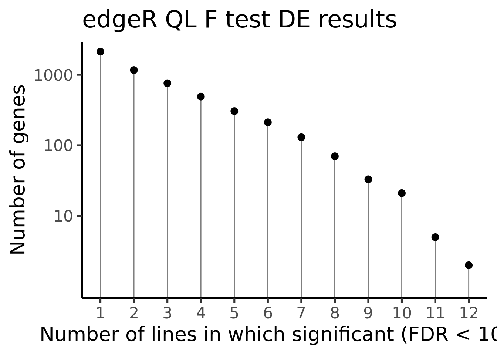
ggsave("figures/differential_expression_cardelino-relax/alldonors_de_n_sig_donors_n_sig_genes.png",
height = 7, width = 10)
ggsave("figures/differential_expression_cardelino-relax/alldonors_de_n_sig_donors_n_sig_genes.pdf",
height = 7, width = 10)
ggsave("figures/differential_expression_cardelino-relax/alldonors_de_n_sig_donors_n_sig_genes.svg",
height = 7, width = 10)
p1 <- df_de_sig_unst %>%
group_by(gene) %>%
dplyr::mutate(id = paste0(donor, gene)) %>% distinct(id, .keep_all = TRUE) %>%
dplyr::summarise(n_donors = n()) %>% group_by(n_donors) %>%
dplyr::summarise(count = n()) %>%
ggplot(aes(x = n_donors, y = count)) +
geom_segment(aes(x = n_donors, xend = n_donors, y = count, yend = 0.1),
colour = "gray50") +
geom_point(size = 3) +
scale_x_continuous(breaks = 0:14) +
#coord_cartesian(ylim = c(1, 2200)) +
theme_classic(16) +
xlab("Number of lines significant (FDR < 10%)") +
ylab("Number of genes")
p1 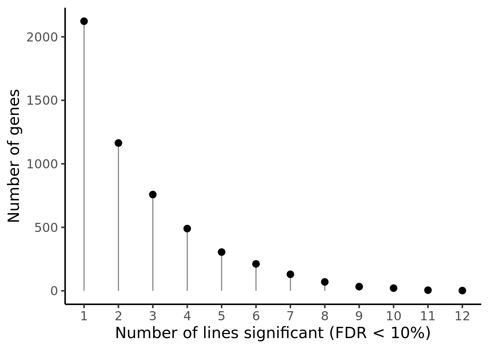
ggsave("figures/differential_expression_cardelino-relax/alldonors_de_n_sig_donors_n_sig_genes_linscale.png",
height = 7, width = 5.5)
ggsave("figures/differential_expression_cardelino-relax/alldonors_de_n_sig_donors_n_sig_genes_linscale.pdf",
height = 7, width = 5.5)
ggsave("figures/differential_expression_cardelino-relax/alldonors_de_n_sig_donors_n_sig_genes_linscale.svg",
height = 7, width = 5.5)p2 <- df_de_sig_unst %>%
group_by(gene) %>%
dplyr::mutate(id = paste0(donor, gene)) %>% distinct(id, .keep_all = TRUE) %>%
dplyr::summarise(n_donors = n()) %>% dplyr::arrange(gene, n_donors) %>% ungroup() %>%
dplyr::mutate(gene = gsub("ENSG.*_", "", gene)) %>%
dplyr::filter(n_donors > 7.5) %>%
ggplot(aes(y = n_donors, x = reorder(gene, n_donors, max))) +
geom_point(alpha = 0.7, size = 4) +
scale_y_continuous(breaks = 7:11) +
ggthemes::scale_colour_tableau() +
coord_flip() +
theme_bw(16) +
xlab("Gene") + ylab("Number of lines significant")
p2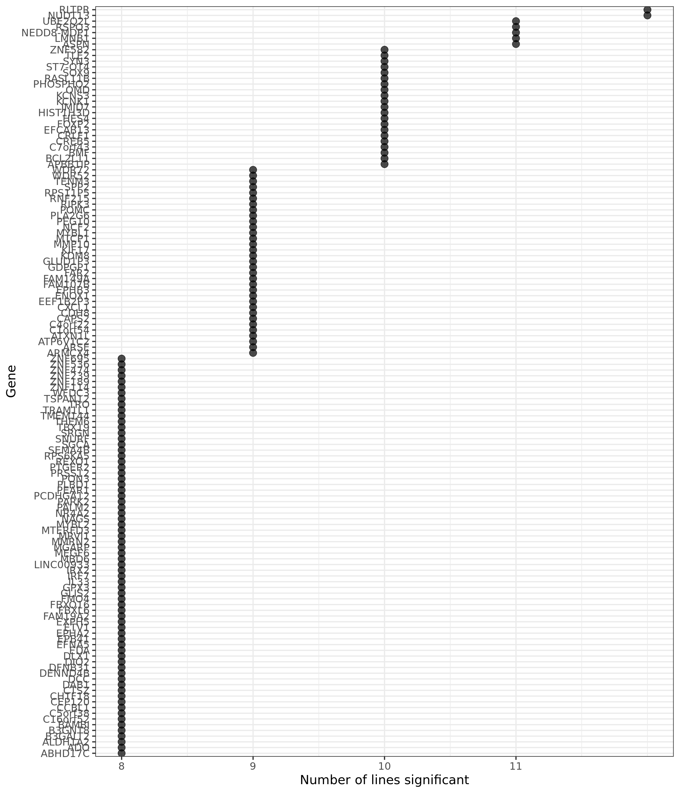
ggsave("figures/differential_expression_cardelino-relax/alldonors_de_n_sig_donors_topgenes.png",
height = 7, width = 5.5)
ggsave("figures/differential_expression_cardelino-relax/alldonors_de_n_sig_donors_topgenes.pdf",
height = 7, width = 5.5)
ggsave("figures/differential_expression_cardelino-relax/alldonors_de_n_sig_donors_topgenes.svg",
height = 7, width = 5.5)
#cowplot::plot_grid(p1, p2, rel_heights = c(0.4, 0.6))
df_donor_n_de <- df_de_sig_unst %>%
group_by(gene) %>%
dplyr::mutate(id = paste0(donor, gene)) %>% distinct(id, .keep_all = TRUE) %>%
group_by(donor) %>%
dplyr::summarise(count = n())
no_de_donor <- unique(df_de_all_unst[["donor"]])[!(unique(df_de_all_unst[["donor"]]) %in% df_donor_n_de[["donor"]])]
df_donor_n_de <- rbind(df_donor_n_de, tibble(donor = no_de_donor, count = 0))Permute gene labels to get a null distribution.
df_de_nsig <- df_de_all_unst %>% dplyr::filter(FDR < 0.1) %>%
dplyr::mutate(id = paste0(donor, gene)) %>% distinct(id, .keep_all = TRUE) %>%
group_by(donor) %>%
dplyr::summarise(n_sig = n())
df_nsig_ncells_de <- full_join(df_ncells_de, df_de_nsig)
df_nsig_ncells_de$n_sig[is.na(df_nsig_ncells_de$n_sig)] <- 0
permute_gene_labels <- function(gene_names, n_de) {
sampled_genes <- c()
for (i in seq_along(n_de))
sampled_genes <- c(sampled_genes, sample(gene_names, size = n_de[i]))
tab <- table(table(sampled_genes))
df <- tibble(n_donors = 1:12, n_genes = 0)
df[names(tab), 2] <- tab
df
}
n_perm <- 1000
df_perm <- list()
for (i in seq_len(n_perm))
df_perm[[i]] <- permute_gene_labels(rownames(de_res$qlf_list$vass$table),
df_nsig_ncells_de[["n_sig"]])
df_perm <- do.call("rbind", df_perm)
df_perm <- dplyr::mutate(df_perm, data_type = "permuted")
df_perm %>% group_by(n_donors) %>% dplyr::summarise(min = min(n_genes),
median = median(n_genes),
mean = mean(n_genes),
max = max(n_genes))# A tibble: 12 x 5
n_donors min median mean max
<int> <dbl> <dbl> <dbl> <dbl>
1 1 3919 4085 4084. 4259
2 2 2416 2534 2534. 2674
3 3 896 986 986. 1068
4 4 226 270 271. 316
5 5 35 56 56.1 78
6 6 0 9 9.03 19
7 7 0 1 1.11 7
8 8 0 0 0.123 2
9 9 0 0 0.009 1
10 10 0 0 0 0
11 11 0 0 0 0
12 12 0 0 0 0ppp <- df_de_sig_unst %>%
group_by(gene) %>%
dplyr::mutate(id = paste0(donor, gene)) %>% distinct(id, .keep_all = TRUE) %>%
dplyr::summarise(n_donors = n()) %>% group_by(n_donors) %>%
dplyr::summarise(n_genes = n()) %>% dplyr::mutate(data_type = "observed") %>%
ggplot(aes(x = n_donors, y = n_genes)) +
# geom_segment(aes(x = n_donors, xend = n_donors, y = count, yend = 0.1),
# colour = "gray50") +
# geom_hline(yintercept = 0, linetype = 2) +
geom_hline(yintercept = 0) +
geom_boxplot(aes(group = n_donors, y = n_genes, colour = data_type),
fill = "gray80", data = df_perm, show.legend = FALSE) +
geom_point(aes(colour = data_type), shape = 17, size = 5) +
scale_x_continuous(breaks = 0:13) +
scale_y_sqrt(breaks = c(0, 10, 100, 500, 1000, 2000, 3000),
labels = c(0, 10, 100, 500, 1000, 2000, 3000),
limits = c(0, 4500)) +
scale_colour_manual(name = '',
values = c("observed" = "black", "permuted" = "gray50"),
labels = c("observed", "permuted")) +
coord_cartesian(ylim = c(0, 4500)) +
theme_bw(18) +
theme(legend.position = c(0.8, 0.88),
panel.grid.major.x = element_blank(),
panel.grid.minor.x = element_blank()) +
guides(colour = guide_legend(override.aes = list(shape = c(17, 19))),
fill = FALSE, boxplot = FALSE) +
xlab("Number of lines significant (FDR < 10%)") +
ylab("Number of genes")
ggsave("figures/differential_expression_cardelino-relax/alldonors_de_n_sig_donors_n_sig_genes_sqrtscale_perm.png",
height = 7, width = 10, plot = ppp)
ggsave("figures/differential_expression_cardelino-relax/alldonors_de_n_sig_donors_n_sig_genes_sqrtscale_perm.pdf",
height = 7, width = 10, plot = ppp)
ggsave("figures/differential_expression_cardelino-relax/alldonors_de_n_sig_donors_n_sig_genes_sqrtscale_perm.svg",
height = 7, width = 10, plot = ppp)
df_de_sig_unst %>%
group_by(gene) %>%
dplyr::mutate(id = paste0(donor, gene)) %>% distinct(id, .keep_all = TRUE) %>%
dplyr::summarise(n_donors = n()) %>% group_by(n_donors) %>%
dplyr::summarise(n_genes = n()) %>% dplyr::mutate(data_type = "observed") %>%
ggplot(aes(x = n_donors, y = n_genes)) +
# geom_segment(aes(x = n_donors, xend = n_donors, y = count, yend = 0.1),
# colour = "gray50") +
# geom_hline(yintercept = 0, linetype = 2) +
geom_hline(yintercept = 0) +
geom_boxplot(aes(group = n_donors, y = n_genes, colour = data_type),
fill = "gray80", data = df_perm, show.legend = FALSE) +
geom_point(aes(colour = data_type), shape = 17, size = 5) +
scale_x_continuous(breaks = 0:13) +
scale_y_sqrt(breaks = c(0, 10, 100, 500, 1000, 2000, 4000),
labels = c(0, 10, 100, 500, 1000, 2000, 4000),
limits = c(0, 4500)) +
scale_colour_manual(name = '',
values = c("observed" = "black", "permuted" = "gray50"),
labels = c("observed", "permuted")) +
coord_cartesian(ylim = c(0, 4500)) +
theme(legend.position = c(0.7, 0.88),
panel.grid.major.x = element_blank(),
panel.grid.minor.x = element_blank()) +
guides(colour = guide_legend(override.aes = list(shape = c(17, 19))),
fill = FALSE, boxplot = FALSE) +
xlab("Number of lines significant (FDR < 10%)") +
ylab("Number of genes")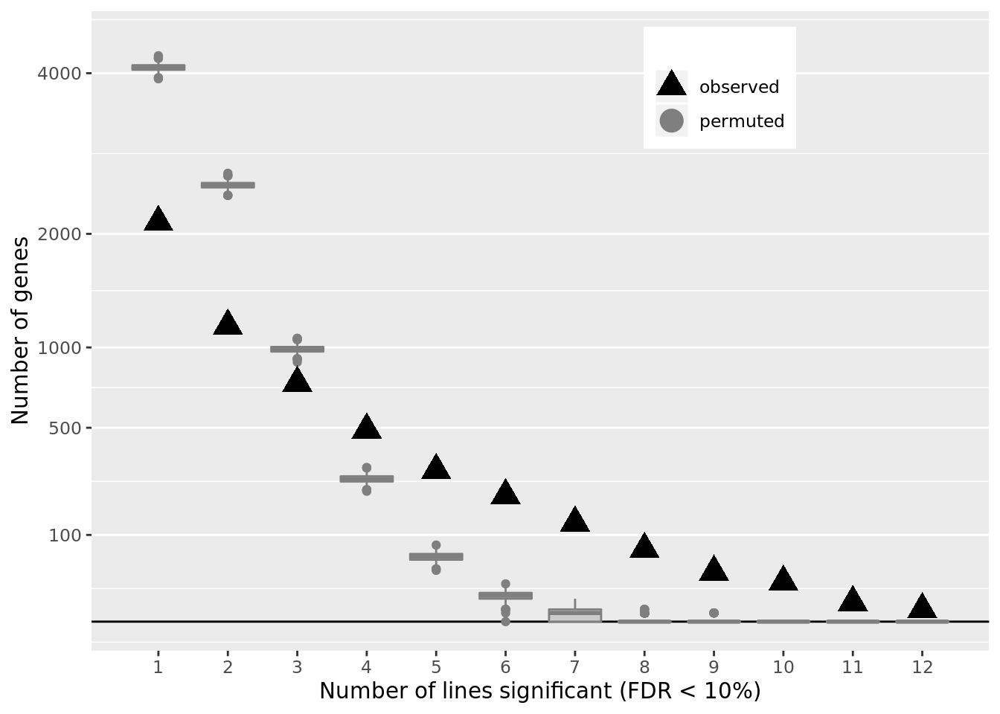
ggsave("figures/differential_expression_cardelino-relax/alldonors_de_n_sig_donors_n_sig_genes_sqrtscale_perm_skinny.png",
height = 5.5, width = 6.5)
ggsave("figures/differential_expression_cardelino-relax/alldonors_de_n_sig_donors_n_sig_genes_sqrtscale_perm_veryskinny.png",
height = 7.5, width = 6.5)Look at recurrently DE genes.
df_gene_n_de <- df_de_sig_unst %>%
group_by(gene) %>%
dplyr::mutate(id = paste0(donor, gene)) %>% distinct(id, .keep_all = TRUE) %>%
group_by(gene) %>%
dplyr::summarise(count = n()) %>%
dplyr::arrange(desc(count)) %>%
dplyr::mutate(ensembl_gene_id = gsub("_.*", "", gene),
hgnc_symbol = gsub(".*_", "", gene))
df_gene_n_de <- left_join(
df_gene_n_de,
dplyr::select(de_res$qlf_pairwise$joxm$clone2_clone1$table,
ensembl_gene_id, hgnc_symbol, entrezid)
)
df_gene_n_de <- dplyr::mutate(
df_gene_n_de,
cell_cycle_growth = (entrezid %in%
c(Hs.H$HALLMARK_G2M_CHECKPOINT,
Hs.H$HALLMARK_MITOTIC_SPINDLE,
Hs.H$HALLMARK_E2F_TARGETS)),
myc = (entrezid %in% c(Hs.H$HALLMARK_MYC_TARGETS_V1,
Hs.H$HALLMARK_MYC_TARGETS_V2)),
emt = (entrezid %in% c(Hs.H$HALLMARK_EPITHELIAL_MESENCHYMAL_TRANSITION))
)
df_gene_n_de %>% dplyr::filter(count >= 8) %>%
DT::datatable(.)Camera results
First, aggregate gene set enrichment results across all donors.
fdr_thresh <- 1
df_camera_all_unst <- tibble()
for (geneset in names(de_res[["camera"]])) {
for (donor in names(de_res[["camera"]][[geneset]])) {
for (coeff in names(de_res[["camera"]][[geneset]][[donor]])) {
for (stat in names(de_res[["camera"]][[geneset]][[donor]][[coeff]])) {
tmp <- de_res[["camera"]][[geneset]][[donor]][[coeff]][[stat]]
tmp <- tmp[tmp$FDR <= fdr_thresh,]
if (nrow(tmp) > 0.5) {
tmp[["collection"]] <- geneset
tmp[["geneset"]] <- rownames(tmp)
tmp[["coeff"]] <- coeff
tmp[["donor"]] <- donor
tmp[["stat"]] <- stat
df_camera_all_unst <- bind_rows(df_camera_all_unst, tmp)
}
}
}
}
}
fdr_thresh <- 0.05
df_camera_sig_unst <- tibble()
for (geneset in names(de_res[["camera"]])) {
for (donor in names(de_res[["camera"]][[geneset]])) {
for (coeff in names(de_res[["camera"]][[geneset]][[donor]])) {
for (stat in names(de_res[["camera"]][[geneset]][[donor]][[coeff]])) {
tmp <- de_res[["camera"]][[geneset]][[donor]][[coeff]][[stat]]
tmp <- tmp[tmp$FDR <= fdr_thresh,]
if (nrow(tmp) > 0.5) {
tmp[["collection"]] <- geneset
tmp[["geneset"]] <- rownames(tmp)
tmp[["coeff"]] <- coeff
tmp[["donor"]] <- donor
tmp[["stat"]] <- stat
df_camera_sig_unst <- bind_rows(df_camera_sig_unst, tmp)
}
}
}
}
}
df_camera_sig_unst <- dplyr::mutate(
df_camera_sig_unst,
contrast = gsub("_", " - ", coeff),
msigdb_collection = plyr::mapvalues(collection, from = c("c2", "c6", "H"), to = c("MSigDB curated (c2)", "MSigDB oncogenic (c6)", "MSigDB Hallmark")))
df_camera_all_unst <- dplyr::mutate(
df_camera_all_unst,
contrast = gsub("_", " - ", coeff),
msigdb_collection = plyr::mapvalues(collection, from = c("c2", "c6", "H"), to = c("MSigDB curated (c2)", "MSigDB oncogenic (c6)", "MSigDB Hallmark")))We now have a dataframe for significant (FDR <5%) results from the camera gene set enrichment results.
# A tibble: 6 x 11
NGenes Direction PValue FDR collection geneset coeff donor stat
<dbl> <chr> <dbl> <dbl> <chr> <chr> <chr> <chr> <chr>
1 7 Down 9.11e-9 4.29e-5 c2 WANG_R… clon… euts signF
2 5 Down 2.04e-8 4.80e-5 c2 GUTIER… clon… euts signF
3 7 Down 1.89e-7 2.95e-4 c2 KUMAMO… clon… euts signF
4 3 Down 3.27e-7 3.85e-4 c2 REACTO… clon… euts signF
5 2 Down 7.99e-7 7.52e-4 c2 SMID_B… clon… euts signF
6 7 Down 1.20e-6 8.46e-4 c2 THILLA… clon… euts signF
# … with 2 more variables: contrast <chr>, msigdb_collection <chr>And a dataframe with all results.
# A tibble: 6 x 11
NGenes Direction PValue FDR collection geneset coeff donor stat
<dbl> <chr> <dbl> <dbl> <chr> <chr> <chr> <chr> <chr>
1 7 Down 1.62e-4 0.764 c2 WANG_R… clon… euts logFC
2 7 Down 5.48e-4 0.862 c2 THILLA… clon… euts logFC
3 55 Up 7.22e-4 0.862 c2 PUJANA… clon… euts logFC
4 10 Down 7.65e-4 0.862 c2 BIOCAR… clon… euts logFC
5 3 Down 9.17e-4 0.862 c2 REACTO… clon… euts logFC
6 2 Down 1.30e-3 0.871 c2 ALONSO… clon… euts logFC
# … with 2 more variables: contrast <chr>, msigdb_collection <chr>For now, focus on gene set enrichment results computed using log-fold change statistics for pairwise comparisons of clones estimated from the edgeR QL-F models.
We can look at all significant results summarised by donor, geneset and pairwise contrast of clones.
df_camera_sig_unst %>%
dplyr::filter(stat == "logFC") %>%
dplyr::mutate(donor = factor(donor, levels = rev(levels(factor(donor))))) %>%
ggplot(aes(y = -log10(PValue), x = donor, colour = contrast)) +
ggbeeswarm::geom_quasirandom(alpha = 0.7, groupOnX = FALSE) +
facet_grid(contrast ~ msigdb_collection) +
scale_colour_brewer(palette = "Accent") +
coord_flip() + theme_bw()
Similarly, we can look at all results summarised by donor, geneset and pairwise contrast of clones.
df_camera_all_unst %>%
dplyr::filter(stat == "logFC") %>%
dplyr::mutate(donor = factor(donor, levels = rev(levels(factor(donor))))) %>%
ggplot(aes(y = -log10(FDR), x = donor, colour = contrast)) +
ggbeeswarm::geom_quasirandom(alpha = 0.7, groupOnX = FALSE) +
geom_hline(yintercept = -log10(0.05), linetype = 2, colour = "firebrick") +
facet_grid(contrast ~ msigdb_collection, scales = "free_x") +
scale_colour_brewer(palette = "Accent") +
coord_flip() + theme_bw()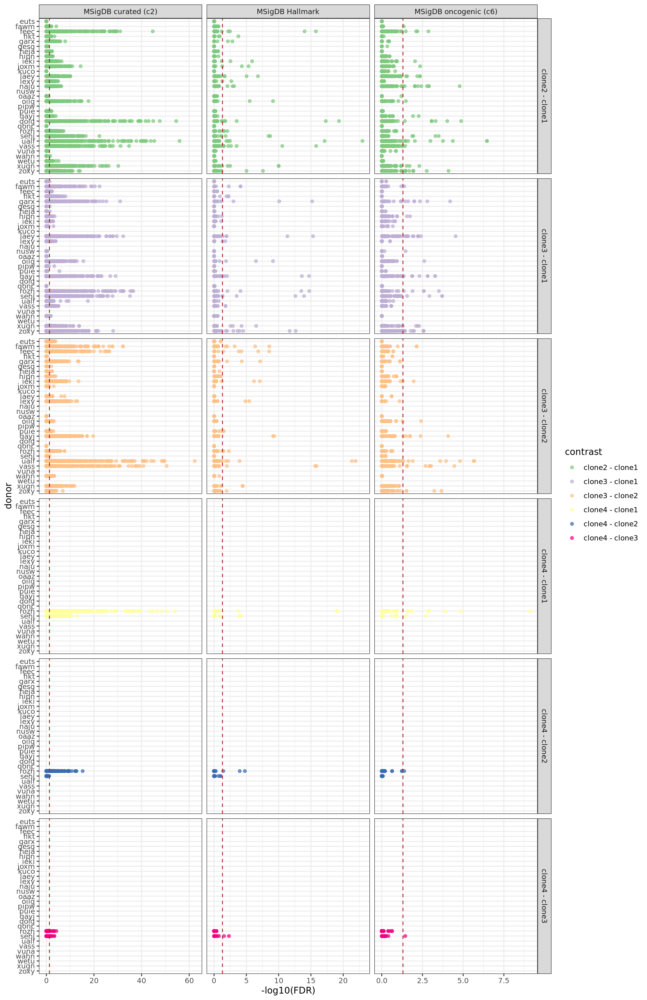
ggsave("figures/differential_expression_cardelino-relax/alldonors_camera_enrichment_by_donor_all_results.png",
height = 16, width = 14)
ggsave("figures/differential_expression_cardelino-relax/alldonors_camera_enrichment_by_donor_all_results.pdf",
height = 16, width = 14)
ggsave("figures/differential_expression_cardelino-relax/alldonors_camera_enrichment_by_donor_all_results.svg",
height = 16, width = 14)We can check the number of significant gene sets for each donor, for each MSigDB gene set collection.
df_camera_sig_unst %>%
dplyr::filter(stat == "logFC") %>%
dplyr::filter(FDR < 0.05) %>%
group_by(donor, msigdb_collection) %>%
dplyr::summarise(n_sig = n()) %>% print(n = Inf)# A tibble: 63 x 3
# Groups: donor [27]
donor msigdb_collection n_sig
<chr> <chr> <int>
1 euts MSigDB curated (c2) 29
2 fawm MSigDB curated (c2) 317
3 fawm MSigDB Hallmark 8
4 fawm MSigDB oncogenic (c6) 4
5 feec MSigDB curated (c2) 521
6 feec MSigDB Hallmark 9
7 feec MSigDB oncogenic (c6) 4
8 fikt MSigDB curated (c2) 84
9 fikt MSigDB Hallmark 4
10 garx MSigDB curated (c2) 429
11 garx MSigDB Hallmark 8
12 garx MSigDB oncogenic (c6) 7
13 gesg MSigDB curated (c2) 2
14 heja MSigDB curated (c2) 18
15 hipn MSigDB curated (c2) 77
16 hipn MSigDB oncogenic (c6) 2
17 ieki MSigDB curated (c2) 274
18 ieki MSigDB Hallmark 4
19 ieki MSigDB oncogenic (c6) 2
20 joxm MSigDB curated (c2) 142
21 joxm MSigDB Hallmark 2
22 joxm MSigDB oncogenic (c6) 1
23 laey MSigDB curated (c2) 509
24 laey MSigDB Hallmark 9
25 laey MSigDB oncogenic (c6) 20
26 lexy MSigDB curated (c2) 262
27 lexy MSigDB Hallmark 4
28 naju MSigDB curated (c2) 97
29 naju MSigDB Hallmark 3
30 naju MSigDB oncogenic (c6) 10
31 nusw MSigDB oncogenic (c6) 1
32 oilg MSigDB curated (c2) 409
33 oilg MSigDB Hallmark 5
34 oilg MSigDB oncogenic (c6) 3
35 pipw MSigDB curated (c2) 1
36 puie MSigDB curated (c2) 38
37 puie MSigDB Hallmark 3
38 qayj MSigDB curated (c2) 466
39 qayj MSigDB Hallmark 7
40 qayj MSigDB oncogenic (c6) 20
41 qolg MSigDB curated (c2) 324
42 qolg MSigDB Hallmark 5
43 qolg MSigDB oncogenic (c6) 7
44 rozh MSigDB curated (c2) 799
45 rozh MSigDB Hallmark 16
46 rozh MSigDB oncogenic (c6) 15
47 sehl MSigDB curated (c2) 608
48 sehl MSigDB Hallmark 12
49 sehl MSigDB oncogenic (c6) 11
50 ualf MSigDB curated (c2) 719
51 ualf MSigDB Hallmark 10
52 ualf MSigDB oncogenic (c6) 18
53 vass MSigDB curated (c2) 587
54 vass MSigDB Hallmark 14
55 vass MSigDB oncogenic (c6) 10
56 wahn MSigDB curated (c2) 32
57 wetu MSigDB curated (c2) 19
58 xugn MSigDB curated (c2) 521
59 xugn MSigDB Hallmark 10
60 xugn MSigDB oncogenic (c6) 6
61 zoxy MSigDB curated (c2) 692
62 zoxy MSigDB Hallmark 11
63 zoxy MSigDB oncogenic (c6) 32df_camera_sig_unst %>%
dplyr::filter(stat == "logFC", msigdb_collection == "MSigDB Hallmark") %>%
dplyr::filter(FDR < 0.05) %>%
group_by(donor, msigdb_collection) %>%
dplyr::summarise(n_sig = n()) %>% print(n = Inf)# A tibble: 19 x 3
# Groups: donor [19]
donor msigdb_collection n_sig
<chr> <chr> <int>
1 fawm MSigDB Hallmark 8
2 feec MSigDB Hallmark 9
3 fikt MSigDB Hallmark 4
4 garx MSigDB Hallmark 8
5 ieki MSigDB Hallmark 4
6 joxm MSigDB Hallmark 2
7 laey MSigDB Hallmark 9
8 lexy MSigDB Hallmark 4
9 naju MSigDB Hallmark 3
10 oilg MSigDB Hallmark 5
11 puie MSigDB Hallmark 3
12 qayj MSigDB Hallmark 7
13 qolg MSigDB Hallmark 5
14 rozh MSigDB Hallmark 16
15 sehl MSigDB Hallmark 12
16 ualf MSigDB Hallmark 10
17 vass MSigDB Hallmark 14
18 xugn MSigDB Hallmark 10
19 zoxy MSigDB Hallmark 11df_camera_sig_unst %>%
dplyr::filter(stat == "logFC", msigdb_collection == "MSigDB Hallmark") %>%
dplyr::filter(FDR < 0.05) %>%
group_by(geneset, msigdb_collection) %>%
dplyr::summarise(n_sig = n()) %>% print(n = Inf)# A tibble: 17 x 3
# Groups: geneset [17]
geneset msigdb_collection n_sig
<chr> <chr> <int>
1 HALLMARK_ANGIOGENESIS MSigDB Hallmark 5
2 HALLMARK_APICAL_JUNCTION MSigDB Hallmark 1
3 HALLMARK_COAGULATION MSigDB Hallmark 5
4 HALLMARK_E2F_TARGETS MSigDB Hallmark 40
5 HALLMARK_EPITHELIAL_MESENCHYMAL_TRANSITION MSigDB Hallmark 5
6 HALLMARK_G2M_CHECKPOINT MSigDB Hallmark 40
7 HALLMARK_INTERFERON_ALPHA_RESPONSE MSigDB Hallmark 2
8 HALLMARK_INTERFERON_GAMMA_RESPONSE MSigDB Hallmark 2
9 HALLMARK_KRAS_SIGNALING_DN MSigDB Hallmark 1
10 HALLMARK_KRAS_SIGNALING_UP MSigDB Hallmark 1
11 HALLMARK_MITOTIC_SPINDLE MSigDB Hallmark 17
12 HALLMARK_MYC_TARGETS_V1 MSigDB Hallmark 7
13 HALLMARK_MYC_TARGETS_V2 MSigDB Hallmark 1
14 HALLMARK_PANCREAS_BETA_CELLS MSigDB Hallmark 1
15 HALLMARK_REACTIVE_OXIGEN_SPECIES_PATHWAY MSigDB Hallmark 1
16 HALLMARK_SPERMATOGENESIS MSigDB Hallmark 14
17 HALLMARK_TNFA_SIGNALING_VIA_NFKB MSigDB Hallmark 1We can look at the number of significant gene sets for each donor.
## simpler version
df_camera_all_unst %>%
dplyr::filter(stat == "logFC") %>%
group_by(donor, msigdb_collection) %>%
dplyr::summarise(n_sig = sum(FDR < 0.05)) %>% ungroup() %>%
dplyr::mutate(donor = factor(donor, levels = rev(levels(factor(donor))))) %>%
ggplot(aes(y = n_sig, x = donor)) +
geom_point(alpha = 1, size = 4) +
facet_wrap(~ msigdb_collection, scales = "free_x") +
scale_fill_brewer(palette = "Accent") +
coord_flip() +
theme_bw(16) +
xlab("Donor") + ylab("Number of significant genesets (FDR < 5%)") +
ggtitle("Camera MSigDB gene set enrichment by line")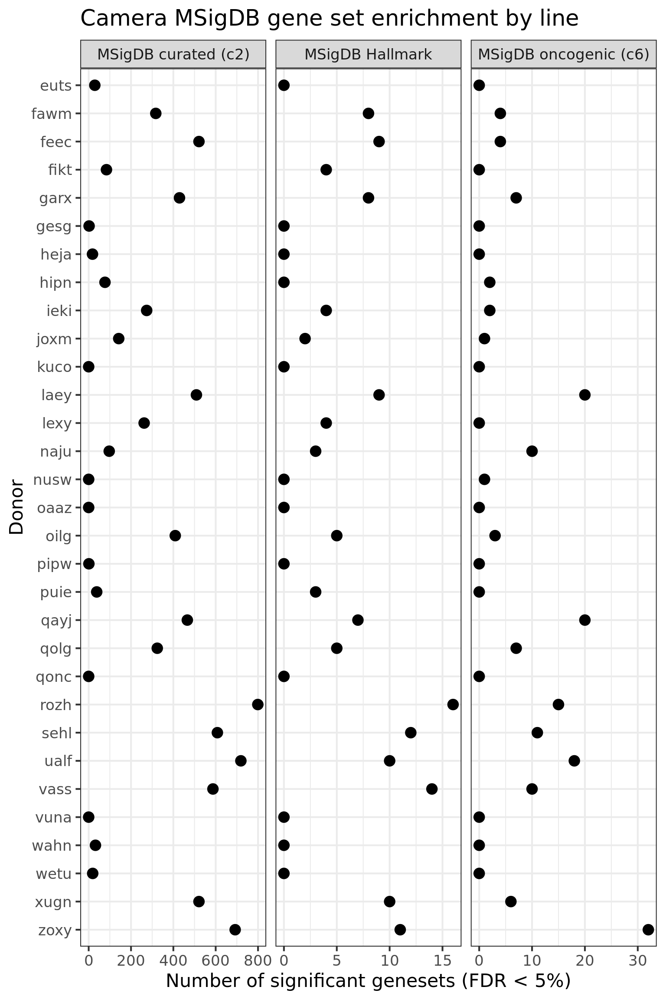
ggsave("figures/differential_expression_cardelino-relax/alldonors_camera_enrichment_by_donor_simple.png",
height = 7, width = 10)
ggsave("figures/differential_expression_cardelino-relax/alldonors_camera_enrichment_by_donor_simple.pdf",
height = 7, width = 10)
ggsave("figures/differential_expression_cardelino-relax/alldonors_camera_enrichment_by_donor_simple.svg",
height = 7, width = 10)We can look at the effect of the the number of cells for each donor on the DE results obtained.
ncells_by_donor <- rep(NA, length(sce_unst_list))
names(ncells_by_donor) <- names(sce_unst_list)
for (don in names(sce_unst_list))
ncells_by_donor[don] <- ncol(sce_unst_list[[don]])
df_camera_all_unst %>%
dplyr::filter(stat == "logFC") %>%
group_by(donor, msigdb_collection) %>%
dplyr::summarise(n_sig = sum(FDR < 0.05)) %>% ungroup() -> df_to_plot
df_to_plot <- inner_join(df_to_plot,
tibble(donor = names(ncells_by_donor),
ncells = ncells_by_donor))
df_to_plot %>%
dplyr::mutate(donor = factor(donor, levels = rev(levels(factor(donor))))) %>%
ggplot(aes(y = n_sig, x = donor, size = ncells)) +
geom_point(alpha = 1) +
facet_wrap(~ msigdb_collection, scales = "free_x") +
scale_fill_brewer(palette = "Accent") +
coord_flip() +
theme_bw(16) +
xlab("Donor") + ylab("Number of significant genesets (FDR < 5%)") +
ggtitle("Camera MSigDB gene set enrichment by line")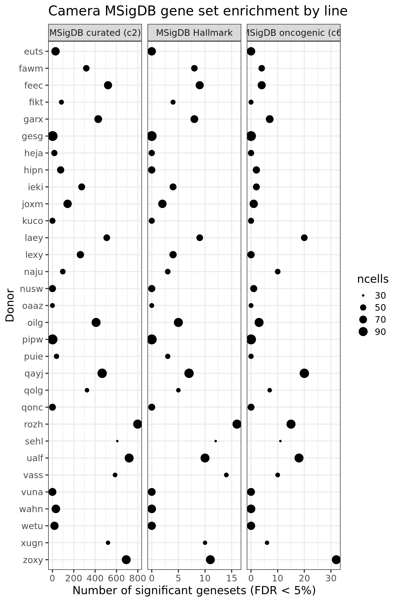
ggsave("figures/differential_expression_cardelino-relax/alldonors_camera_enrichment_by_donor_simple_size_by_ncells.png",
height = 7, width = 10)
ggsave("figures/differential_expression_cardelino-relax/alldonors_camera_enrichment_by_donor_simple_size_by_ncells.pdf",
height = 7, width = 10)
ggsave("figures/differential_expression_cardelino-relax/alldonors_camera_enrichment_by_donor_simple_size_by_ncells.svg",
height = 7, width = 10)Hallmark gene set
Focus now on looking at DE results for the MSigDB Hallmark gene set (50 of the best-characterised gene sets as determined by MSigDB).
Look at the gene sets that are found to be enriched in multiple donors.
## Hallmark geneset
df_camera_sig_unst %>% dplyr::filter(collection == "H") %>%
dplyr::filter(stat == "logFC") %>%
group_by(geneset) %>%
dplyr::mutate(id = paste0(donor, geneset)) %>% distinct(id, .keep_all = TRUE) %>%
dplyr::summarise(n_donors = n()) %>% dplyr::arrange(geneset, n_donors) %>% ungroup() %>%
dplyr::mutate(geneset = gsub("_", " ", gsub("HALLMARK_", "", geneset))) %>%
ggplot(aes(y = n_donors, x = reorder(geneset, n_donors, max))) +
geom_point(alpha = 0.7, size = 4) +
ggthemes::scale_colour_tableau() +
coord_flip() +
theme_bw(14) +
xlab("Gene set") + ylab("Number of lines significant")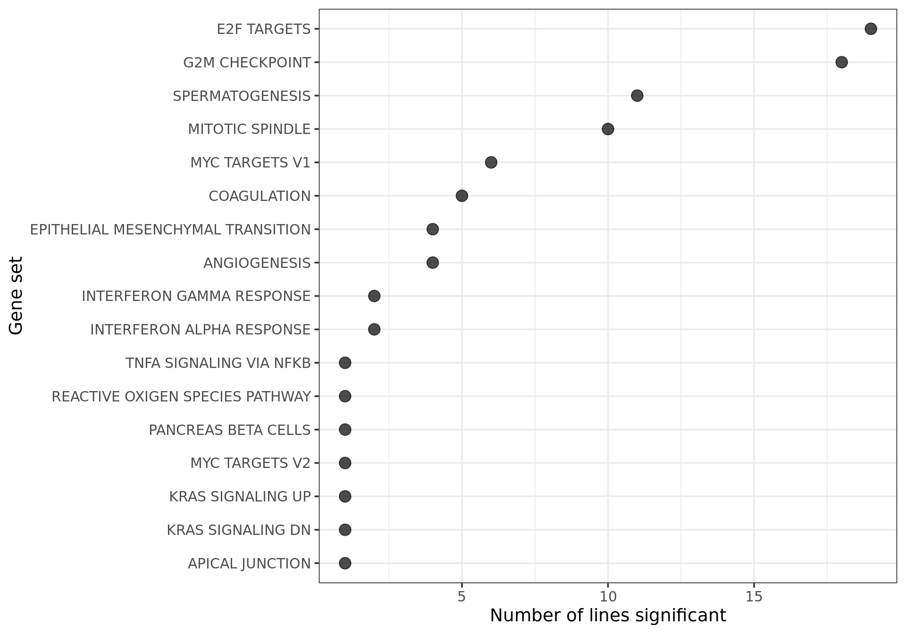
ggsave("figures/differential_expression_cardelino-relax/alldonors_camera_enrichment_H_by_geneset.png",
height = 7, width = 9.5)
ggsave("figures/differential_expression_cardelino-relax/alldonors_camera_enrichment_H_by_geneset.pdf",
height = 7, width = 9.5)
ggsave("figures/differential_expression_cardelino-relax/alldonors_camera_enrichment_H_by_geneset.svg",
height = 7, width = 9.5)
## number of donors with at least one significant geneset
tmp <- df_camera_sig_unst %>% dplyr::filter(collection == "H") %>%
dplyr::filter(stat == "logFC") %>%
group_by(geneset)
unique(tmp[["donor"]]) [1] "fawm" "feec" "fikt" "garx" "ieki" "joxm" "laey" "lexy" "naju" "oilg"
[11] "puie" "qayj" "qolg" "rozh" "sehl" "ualf" "vass" "xugn" "zoxy"19 donors have at least one significantly enriched Hallmark gene set.
Overall, we obtain very similar gene set enrichment results if we use the signed-F statistic rather than logFC as the ranking statistic for camera.
## Hallmark geneset
df_camera_sig_unst %>% dplyr::filter(collection == "H") %>%
dplyr::filter(stat == "signF") %>%
group_by(geneset) %>%
dplyr::mutate(id = paste0(donor, geneset)) %>% distinct(id, .keep_all = TRUE) %>%
dplyr::summarise(n_donors = n()) %>% dplyr::arrange(geneset, n_donors) %>% ungroup() %>%
dplyr::mutate(geneset = gsub("_", " ", gsub("HALLMARK_", "", geneset))) %>%
ggplot(aes(y = n_donors, x = reorder(geneset, n_donors, max))) +
geom_point(alpha = 0.7, size = 4) +
ggthemes::scale_colour_tableau() +
coord_flip() +
theme_bw(14) +
xlab("Gene set") + ylab("Number of lines significant")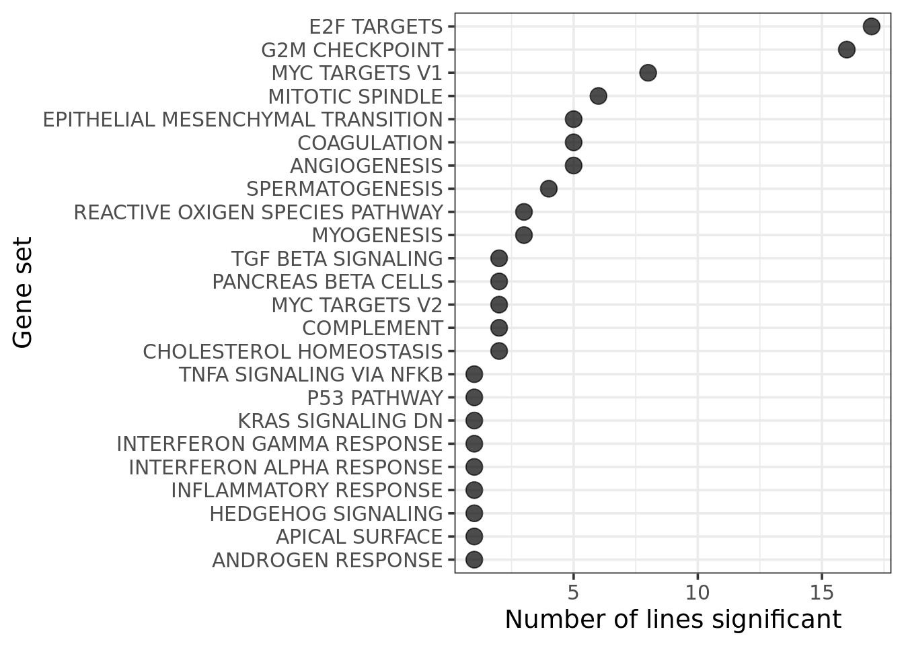
For gene sets related directly to cell cycle and growth, we see contrasts being both up- and down- regulated, but for EMT, coagulation and angiogenesis pathways, we only see these down-regulated.
df_camera_sig_unst %>% dplyr::filter(collection == "H") %>%
dplyr::filter(stat == "logFC") %>%
group_by(geneset, Direction) %>%
dplyr::mutate(id = paste0(donor, geneset)) %>%
dplyr::summarise(n_donors = n()) %>% dplyr::arrange(geneset, n_donors) %>% ungroup() %>%
ggplot(aes(y = n_donors, x = reorder(geneset, n_donors, max),
colour = Direction)) +
geom_point(alpha = 0.7, size = 4, position = position_dodge(width = 0.5)) +
ggthemes::scale_colour_tableau() +
coord_flip() +
theme_bw(16) +
xlab("Gene set") + ylab("Number of lines significant") +
ggtitle("Camera MSigDB Hallmark gene set enrichment")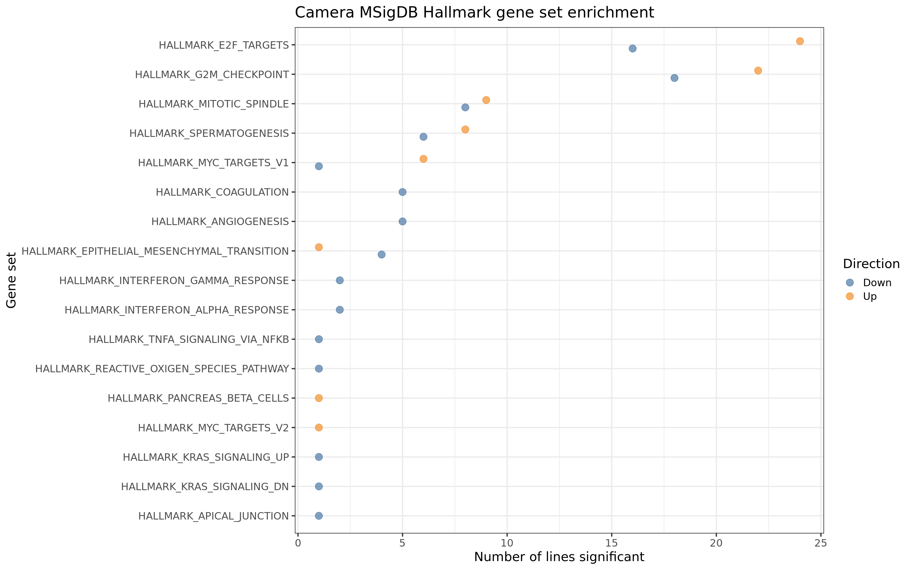
Heatmap of results for camera Hallmark geneset testing
We can get an overview of all the Hallmark gene set results by producing a heatmap, first showing just the significant (FDR < 5%) results across all donors and pairwise contrasts of clones.
repeated_sig_H_genesets <- df_camera_sig_unst %>%
dplyr::filter(collection == "H", stat == "logFC") %>%
group_by(geneset) %>%
dplyr::mutate(id = paste0(donor, geneset)) %>% distinct(id, .keep_all = TRUE) %>%
dplyr::summarise(n_donors = n()) %>% dplyr::arrange(n_donors) %>%
dplyr::filter(n_donors > 0.5)
repeated_sig_H_genesets_vec <- unique(repeated_sig_H_genesets[["geneset"]])
repeated_sig_H_genesets_vec <- gsub("_", " ", gsub("HALLMARK_", "",
repeated_sig_H_genesets_vec))
df_4_heatmap <- df_camera_sig_unst %>%
dplyr::filter(collection == "H", stat == "logFC") %>%
dplyr::mutate(geneset = gsub("_", " ", gsub("HALLMARK_", "", geneset))) %>%
dplyr::mutate(geneset =
factor(geneset, levels = repeated_sig_H_genesets_vec)) %>%
dplyr::filter(geneset %in% repeated_sig_H_genesets_vec) %>%
dplyr::mutate(id = paste0(donor, ": ", contrast))
div_lines <- gsub(": c.*", "",
sort(unique(paste0(df_4_heatmap[["donor"]], ": ",
df_4_heatmap[["contrast"]])))) %>% table %>% cumsum + 0.5
df_4_heatmap %>%
ggplot(aes(x = id, y = geneset, fill = Direction)) +
geom_tile() +
geom_vline(xintercept = div_lines, colour = "gray70") +
scale_fill_manual(values = c("lightgoldenrod1", "sienna1")) +
theme(axis.text.x = element_text(angle = 60, hjust = 1))
ggsave("figures/differential_expression_cardelino-relax/top_genesets_H_direction_heatmap.png", height = 6, width = 12)
ggsave("figures/differential_expression_cardelino-relax/top_genesets_H_direction_heatmap.pdf", height = 6, width = 12)
ggsave("figures/differential_expression_cardelino-relax/top_genesets_H_direction_heatmap.svg", height = 6, width = 12)We can do the same for all results for the gene sets that are significantly enriched in at least two donors.
df_camera_all_unst %>%
dplyr::mutate(geneset = gsub("_", " ", gsub("HALLMARK_", "", geneset))) %>%
dplyr::mutate(geneset =
factor(geneset, levels = repeated_sig_H_genesets_vec)) %>%
dplyr::filter(geneset %in% repeated_sig_H_genesets_vec) %>%
dplyr::mutate(id = paste0(donor, ": ", contrast)) ->
df_4_heatmap_all
df_4_heatmap_all <- dplyr::mutate(
df_4_heatmap_all,
minlog10P = cut(-log10(PValue), breaks = c(0, 1, 2, 3, 4, 5, 30)))
div_lines_all <- gsub(": c.*", "",
sort(unique(paste0(df_4_heatmap_all[["donor"]], ": ",
df_4_heatmap_all[["contrast"]])))) %>% table %>% cumsum + 0.5
pp <- df_4_heatmap_all %>%
ggplot(aes(x = id, y = geneset, fill = Direction, alpha = minlog10P)) +
geom_tile() +
geom_point(alpha = 1, data = df_4_heatmap, pch = 19, size = 0.5, show.legend = FALSE) +
geom_vline(xintercept = div_lines_all, colour = "gray70") +
scale_fill_manual(values = c("lightgoldenrod1", "sienna1")) +
scale_alpha_discrete(name = "-log10(P)") +
ylab("Gene set") +
xlab("Line and clone comparison") +
theme(axis.text.x = element_text(angle = 60, hjust = 1),
legend.position = "right")
pp 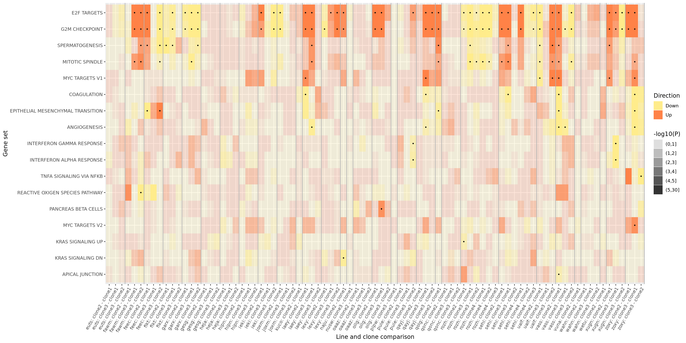
ggsave("figures/differential_expression_cardelino-relax/top_genesets_H_direction_heatmap_all_contrasts.png", height = 9, width = 20)
ggsave("figures/differential_expression_cardelino-relax/top_genesets_H_direction_heatmap_all_contrasts.pdf", height = 9, width = 20)
ggsave("figures/differential_expression_cardelino-relax/top_genesets_H_direction_heatmap_all_contrasts.svg", height = 9, width = 20)We can also add a panel to this figure showing the number of donors in which each of these gene sets is significantly enriched.
## Hallmark geneset
pp_nsig <- df_camera_sig_unst %>% dplyr::filter(collection == "H") %>%
dplyr::filter(stat == "logFC") %>%
group_by(geneset) %>%
dplyr::mutate(id = paste0(donor, geneset)) %>% distinct(id, .keep_all = TRUE) %>%
dplyr::summarise(n_donors = n()) %>% dplyr::arrange(geneset, n_donors) %>% ungroup() %>%
dplyr::mutate(geneset = gsub("_", " ", gsub("HALLMARK_", "", geneset))) %>%
ggplot(aes(y = n_donors, x = reorder(geneset, n_donors, max))) +
geom_hline(yintercept = 0, colour = "gray50") +
geom_segment(aes(xend = reorder(geneset, n_donors, max), yend = 0),
colour = "gray50") +
geom_point(size = 4, colour = "gray30", alpha = 1) +
ggthemes::scale_colour_tableau() +
coord_flip() +
xlab("Gene set") + ylab("Number of lines significant") +
theme(axis.title.y = element_blank(),
axis.text.y = element_blank(),
axis.ticks.y = element_blank(),
axis.line.y = element_blank())
prow <- plot_grid(pp + theme(legend.position = "none"),
pp_nsig, align = 'h', rel_widths = c(7, 1))
lgnd <- get_legend(pp)
plot_grid(prow, lgnd, rel_widths = c(3, .3))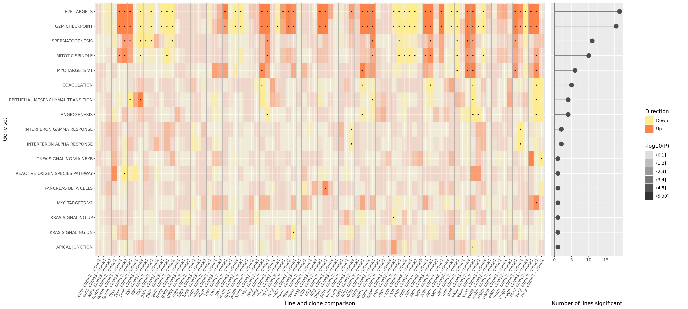
ggsave("figures/differential_expression_cardelino-relax/top_genesets_H_direction_heatmap_all_contrasts_with_nsig_donors.png", height = 9, width = 22)
ggsave("figures/differential_expression_cardelino-relax/top_genesets_H_direction_heatmap_all_contrasts_with_nsig_donors.pdf", height = 9, width = 22)
ggsave("figures/differential_expression_cardelino-relax/top_genesets_H_direction_heatmap_all_contrasts_with_nsig_donors.svg", height = 9, width = 22)However, the plot above is very complicated, so we may want to focus just on the lines for which there are multiple clones that show differing behaviour amongst each other. To simplify, let us just look at the 19 donors that have significant geneset enrichment for at least one contrasts and just look at the 8 gene sets that are significant in at least three lines.
repeated_sig_H_genesets3 <- df_camera_sig_unst %>%
dplyr::filter(collection == "H", stat == "logFC") %>%
group_by(geneset) %>%
dplyr::mutate(id = paste0(donor, geneset)) %>% distinct(id, .keep_all = TRUE) %>%
dplyr::summarise(n_donors = n()) %>% dplyr::arrange(n_donors) %>%
dplyr::filter(n_donors > 2.5)
repeated_sig_H_genesets_vec3 <- unique(repeated_sig_H_genesets3[["geneset"]])
repeated_sig_H_genesets_vec3 <- gsub("_", " ", gsub("HALLMARK_", "",
repeated_sig_H_genesets_vec3))
selected_donors <- c("fawm", "feec", "fikt", "garx", "ieki", "joxm", "laey",
"lexy", "naju", "oilg", "qayj", "qolg", "rozh",
"sehl", "ualf", "vass", "wahn", "xugn", "zoxy")
df_4_heatmap_filt <- df_camera_all_unst %>%
dplyr::mutate(geneset = gsub("_", " ", gsub("HALLMARK_", "", geneset))) %>%
dplyr::mutate(geneset =
factor(geneset, levels = repeated_sig_H_genesets_vec3)) %>%
dplyr::filter(geneset %in% repeated_sig_H_genesets_vec3,
donor %in% selected_donors) %>%
dplyr::mutate(id = paste0(donor, ": ", contrast))
df_4_heatmap_filt_sig <- df_camera_sig_unst %>%
dplyr::filter(collection == "H", stat == "logFC") %>%
dplyr::mutate(geneset = gsub("_", " ", gsub("HALLMARK_", "", geneset))) %>%
dplyr::mutate(geneset =
factor(geneset, levels = repeated_sig_H_genesets_vec3)) %>%
dplyr::filter(geneset %in% repeated_sig_H_genesets_vec3,
donor %in% selected_donors) %>%
dplyr::mutate(id = paste0(donor, ": ", contrast))
df_4_heatmap_filt <- dplyr::mutate(
df_4_heatmap_filt,
minlog10P = cut(-log10(PValue), breaks = c(0, 1, 2, 3, 4, 5, 30)))
div_lines_filt <- gsub(": c.*", "",
sort(unique(paste0(df_4_heatmap_filt[["donor"]], ": ",
df_4_heatmap_filt[["contrast"]])))) %>%
table %>% cumsum + 0.5
pp_filt <- df_4_heatmap_filt %>%
ggplot(aes(x = id, y = geneset, fill = Direction, alpha = minlog10P)) +
geom_tile() +
geom_point(alpha = 1, data = df_4_heatmap_filt_sig, pch = 19, size = 0.5,
show.legend = FALSE) +
geom_vline(xintercept = div_lines_filt, colour = "gray70") +
scale_fill_manual(values = c("lightgoldenrod1", "sienna1")) +
scale_alpha_discrete(name = "-log10(P)") +
ylab("Gene set") +
xlab("Line and clone comparison") +
theme(axis.text.x = element_text(angle = 60, hjust = 1),
legend.position = "right")
pp_filt 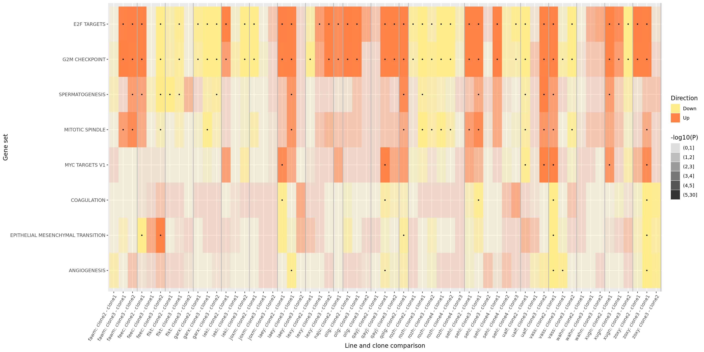
ggsave("figures/differential_expression_cardelino-relax/top_genesets_H_direction_heatmap_filt_contrasts.png", plot = pp_filt, height = 5, width = 12)
ggsave("figures/differential_expression_cardelino-relax/top_genesets_H_direction_heatmap_filt_contrasts.pdf", plot = pp_filt, height = 5, width = 12)
ggsave("figures/differential_expression_cardelino-relax/top_genesets_H_direction_heatmap_filt_contrasts.svg", plot = pp_filt, height = 5, width = 12)
ggsave("figures/differential_expression_cardelino-relax/top_genesets_H_direction_heatmap_filt_contrasts_wide.png", plot = pp_filt, height = 5, width = 16)
ggsave("figures/differential_expression_cardelino-relax/top_genesets_H_direction_heatmap_filt_contrasts_wide.pdf", plot = pp_filt, height = 5, width = 16)
ggsave("figures/differential_expression_cardelino-relax/top_genesets_H_direction_heatmap_filt_contrasts_wide.svg", plot = pp_filt, height = 5, width = 16)Correlation of gene set results and genes contained
Let’s look at the correlation between gene set results (Spearman correlation of signed -log10(P-values) from camera tests) and compare to the proportion of genes overlapping between pairs of gene sets.
repeated_sig_H_genesets_vec2 <- paste0("HALLMARK_",
gsub(" ", "_", repeated_sig_H_genesets_vec))
## all results
df_H_pvals <- df_camera_all_unst %>% dplyr::filter(collection == "H") %>%
dplyr::filter(stat == "logFC", geneset %in% repeated_sig_H_genesets_vec2) %>%
dplyr::mutate(donor_coeff = paste(donor, coeff, sep = "."),
sign = ifelse(Direction == "Down", -1, 1),
signed_P = sign * -log10(PValue)) %>%
dplyr::select(geneset, donor_coeff, signed_P) %>%
tidyr::spread(key = donor_coeff, value = signed_P)
mat_H_pvals <- as.matrix(df_H_pvals[, -1])
rownames(mat_H_pvals) <- gsub("_", " ", gsub("HALLMARK_", "", df_H_pvals[[1]]))
cor_H_pvals <- cor(t(mat_H_pvals), method = "spearman")
p.mat <- cor_pmat(t(mat_H_pvals))
ggcorrplot(cor_H_pvals, hc.order = TRUE, p.mat = p.mat, insig = "blank") +
theme(panel.grid.major = element_blank(),
panel.grid.minor = element_blank())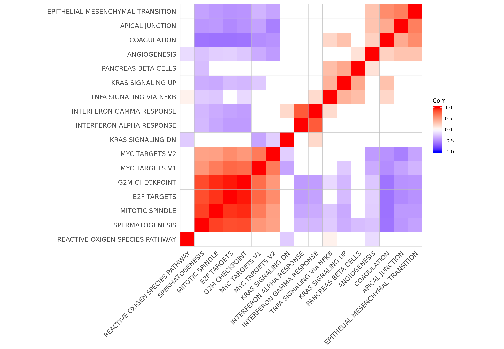
hclust_cor <- hclust(as.dist(1 - cor_H_pvals))
corrplot1 <- ggcorrplot(cor_H_pvals[hclust_cor$order, hclust_cor$order],
p.mat = p.mat[hclust_cor$order, hclust_cor$order], insig = "blank") +
theme(panel.grid.major = element_blank(),
panel.grid.minor = element_blank())
mat_H_gene_overlap <- matrix(nrow = nrow(cor_H_pvals), ncol = ncol(cor_H_pvals),
dimnames = dimnames(cor_H_pvals))
for (i in seq_along(repeated_sig_H_genesets_vec2)) {
for (j in seq_along(repeated_sig_H_genesets_vec2)) {
gs1 <- paste0("HALLMARK_", gsub(" ", "_", rownames(mat_H_gene_overlap)[i]))
gs2 <- paste0("HALLMARK_", gsub(" ", "_", rownames(mat_H_gene_overlap)[j]))
mat_H_gene_overlap[i, j] <- mean(Hs.H[[gs1]] %in% Hs.H[[gs2]])
}
}
corrplot2 <- ggcorrplot(mat_H_gene_overlap[hclust_cor$order, hclust_cor$order]) +
scale_fill_gradient(name = "Gene set\noverlap", low = "white", high = "black") +
theme(panel.grid.major = element_blank(),
panel.grid.minor = element_blank())
corrplot2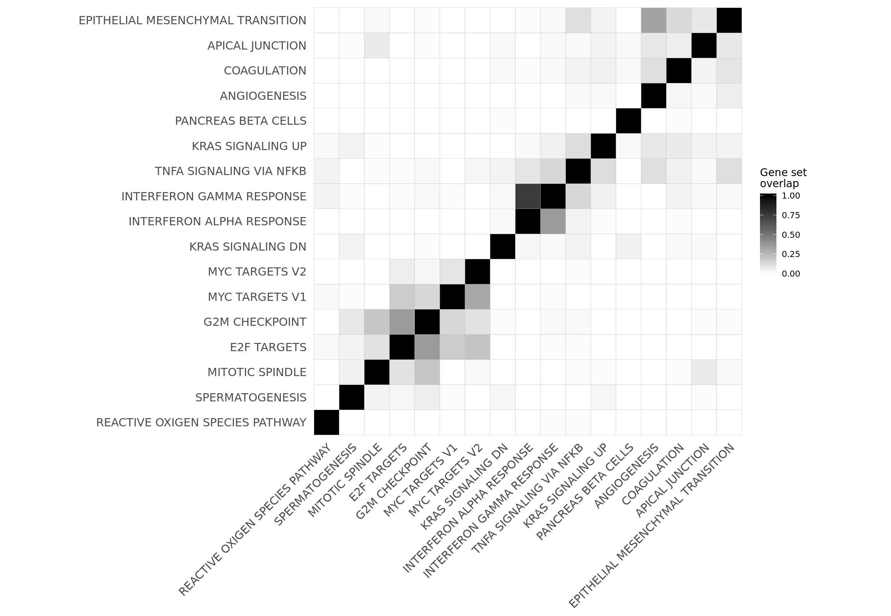
plot_grid(corrplot1 + theme(plot.margin = unit(c(0,0,0,0), "cm")),
corrplot3 + theme(plot.margin = unit(c(0,0,0,0), "cm")),
align = "h", axis = "b", rel_widths = c(0.58, 0.42))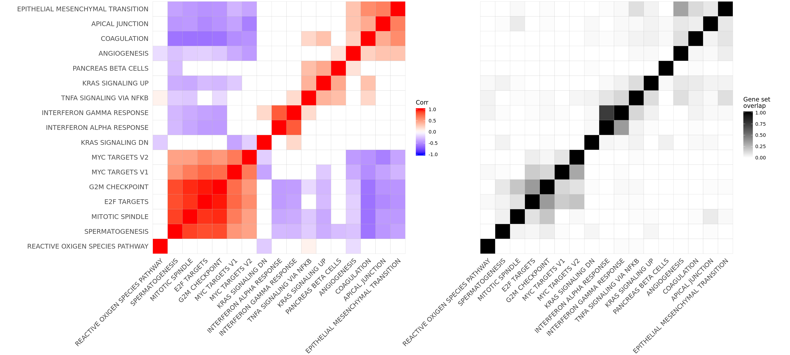
ggsave("figures/differential_expression_cardelino-relax/top_genesets_H_corrplots.png", height = 9, width = 20)
ggsave("figures/differential_expression_cardelino-relax/top_genesets_H_corrplots.pdf", height = 9, width = 20)
ggsave("figures/differential_expression_cardelino-relax/top_genesets_H_corrplots.svg", height = 9, width = 20)Plot gene set correlation with the number of donors in which each gene set is significant.
pp_nsig <- df_camera_sig_unst %>% dplyr::filter(collection == "H") %>%
dplyr::filter(stat == "logFC") %>%
group_by(geneset) %>%
dplyr::mutate(id = paste0(donor, geneset)) %>% distinct(id, .keep_all = TRUE) %>%
dplyr::summarise(n_donors = n()) %>% dplyr::arrange(geneset, n_donors) %>% ungroup() %>%
dplyr::mutate(geneset = gsub("_", " ", gsub("HALLMARK_", "", geneset))) %>%
dplyr::mutate(geneset = factor(
geneset, levels = rownames(mat_H_gene_overlap)[hclust_cor$order])) %>%
ggplot(aes(y = n_donors, x = geneset)) +
geom_hline(yintercept = 0, colour = "gray50") +
geom_segment(aes(xend = geneset, yend = 0),
colour = "gray50") +
geom_point(size = 4, colour = "gray30", alpha = 1) +
ggthemes::scale_colour_tableau() +
coord_flip() +
xlab("Gene set") + ylab("Number of lines\nsignificant") +
theme(axis.title.y = element_blank(),
axis.text.y = element_blank(),
axis.ticks.y = element_blank(),
axis.line.y = element_blank())
ggdraw() +
draw_plot(corrplot1 + theme(legend.position = "top"),
x = 0, y = 0, width = 0.8, scale = 1) +
draw_plot(pp_nsig,
x = 0.685, y = 0.25, width = 0.25, height = 0.6445)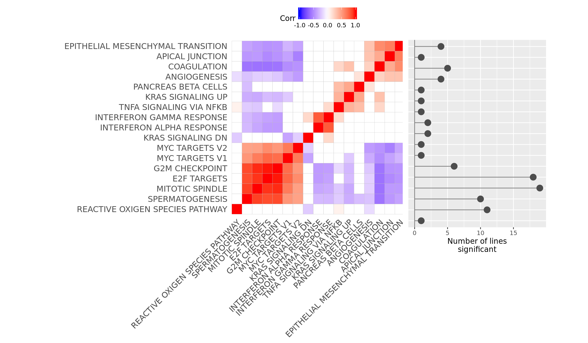
Number of DE genes, pathways and clones vs number of cells
df_donor_info <- read.table("data/donor_info_070818.txt")
df_donor_info <- as_tibble(df_donor_info)
df_donor_info$donor <- df_donor_info$donor_short
df_ncells_de <- assignments %>% dplyr::filter(assigned != "unassigned",
donor_short_id %in% names(de_res$qlf_list)) %>%
group_by(donor_short_id) %>%
dplyr::summarise(n_cells = n())
colnames(df_ncells_de)[1] <- "donor"
df_prop_assigned <- assignments %>%
dplyr::filter(donor_short_id %in% names(de_res$qlf_list)) %>%
group_by(donor_short_id) %>%
dplyr::summarise(prop_assigned = mean(assigned != "unassigned"))
colnames(df_prop_assigned)[1] <- "donor"
df_nvars_by_cat <- readr::read_tsv("output/nvars_by_category_by_donor.tsv")
df_nvars_by_cat_wd <- tidyr::spread(
df_nvars_by_cat[, 1:3], consequence, n_vars_all_genes)
df_nvars_by_cat_wd <- left_join(
dplyr::summarise(group_by(df_nvars_by_cat, donor), nvars_all = sum(n_vars_all_genes)),
df_nvars_by_cat_wd
)
df_nvars_by_cat_wd <- df_nvars_by_cat %>%
dplyr::filter(consequence %in% c("missense", "splicing", "nonsense")) %>%
group_by(donor) %>%
dplyr::summarise(nvars_misnonspli = sum(n_vars_all_genes)) %>%
left_join(., df_nvars_by_cat_wd)
df_donor_info <- left_join(df_ncells_de, df_donor_info)
df_donor_info <- left_join(df_prop_assigned, df_donor_info)
df_donor_info <- left_join(df_donor_n_de, df_donor_info)
df_donor_info$n_de_genes <- df_donor_info$count
df_donor_info <- left_join(df_donor_info, df_nvars_by_cat_wd)
nbglm_nde <- MASS::glm.nb(n_de_genes ~ n_cells, data = df_donor_info)
df_nbglm_nde <- broom::augment(nbglm_nde) %>%
left_join(df_donor_info)
## N DE genes vs Number of cells
df_nbglm_nde %>%
ggplot(aes(x = n_cells, y = n_de_genes)) +
geom_smooth(aes(group = 1), colour = "firebrick", method = "lm", level = 0.9) +
geom_point(size = 3, shape = 21, fill = "gray50") +
geom_label_repel(aes(label = donor)) +
ylab("Number of DE genes") +
xlab("Number of cells") +
scale_fill_manual(values = c("dodgerblue", "#CCCCCC", "dodgerblue4"))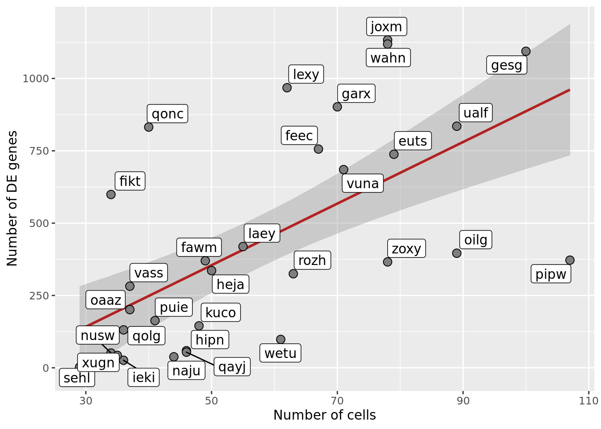
ggsave("figures/differential_expression_cardelino-relax/n_de_genes_vs_n_cells_nogrouping.png",
height = 6.5, width = 6.5)
ggsave("figures/differential_expression_cardelino-relax/n_de_genes_vs_n_cells_nogrouping.pdf",
height = 6.5, width = 6.5)
p1 <- df_nbglm_nde %>%
dplyr::mutate(num_clones = paste(num_clones_total, "clones")) %>%
ggplot(aes(x = n_cells, y = n_de_genes)) +
geom_smooth(aes(group = 1), colour = "firebrick", method = "lm", level = 0.9) +
geom_point(size = 3, shape = 21, fill = "gray50") +
geom_label_repel(aes(label = donor)) +
facet_wrap(~num_clones) +
ylab("Number of DE genes") +
xlab("Number of cells") +
coord_cartesian(ylim = c(0, 1200)) +
scale_fill_manual(values = c("dodgerblue", "#CCCCCC", "dodgerblue4"))
p1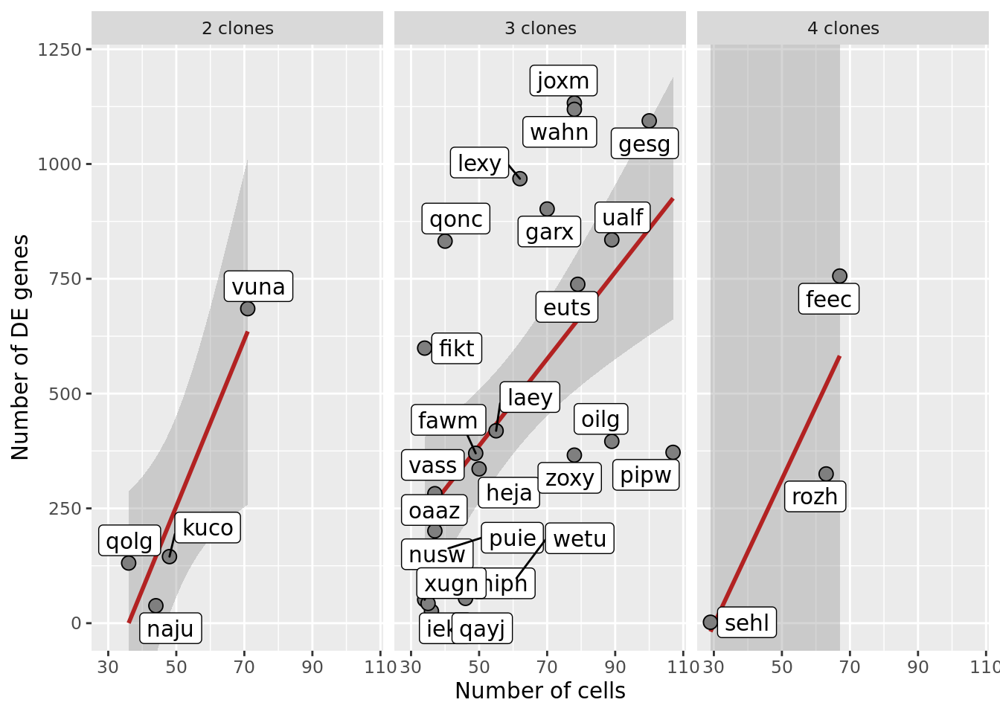
ggsave("figures/differential_expression_cardelino-relax/n_de_genes_vs_n_cells_facet_by_num_clones.png",
height = 6.5, width = 9.5)
ggsave("figures/differential_expression_cardelino-relax/n_de_genes_vs_n_cells_facet_by_num_clones.pdf",
height = 6.5, width = 9.5)
## Number of significant genesets vs number of cells
df_nbglm_nde <- df_camera_sig_unst %>% dplyr::filter(collection == "H") %>%
dplyr::filter(stat == "logFC", FDR < 0.05) %>%
group_by(donor) %>%
dplyr::mutate(id = paste0(donor, geneset)) %>%
distinct(id, .keep_all = TRUE) %>%
summarise(n_sig_genesets = n()) %>%
left_join(df_nbglm_nde, .)
df_nbglm_nde[["n_sig_genesets"]][is.na(df_nbglm_nde[["n_sig_genesets"]])] <- 0
ggplot(df_nbglm_nde, aes(x = n_cells, y = n_sig_genesets)) +
#geom_smooth(aes(group = 1), colour = "firebrick", method = "lm", level = 0.9) +
geom_hline(yintercept = 0, linetype = 2) +
geom_point(size = 3, shape = 21, fill = "gray50") +
geom_label_repel(aes(label = donor)) +
ylab("Number of significant Hallmark genesets") +
xlab("Number of cells") +
scale_fill_manual(values = c("dodgerblue", "#CCCCCC", "dodgerblue4"))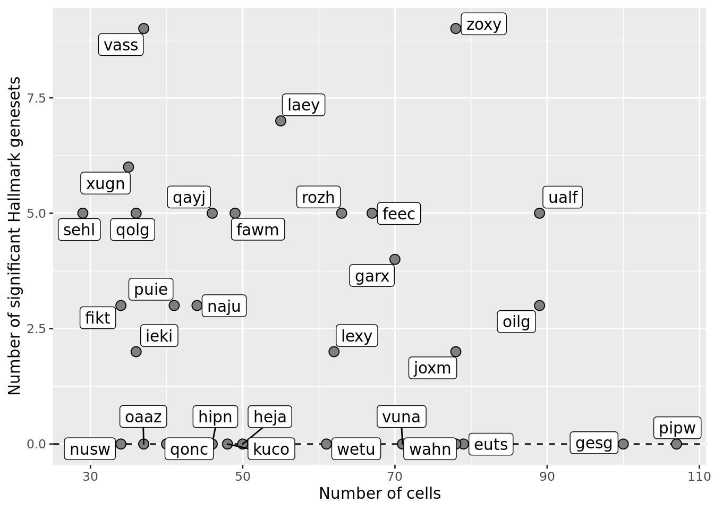
ggsave("figures/differential_expression_cardelino-relax/n_sig_genesets_vs_n_cells_nogrouping.png",
height = 6.5, width = 6.5)
ggsave("figures/differential_expression_cardelino-relax/n_sig_genesets_vs_n_cells_nogrouping.pdf",
height = 6.5, width = 6.5)
p2 <- df_nbglm_nde %>%
dplyr::mutate(num_clones = paste(num_clones_total, "clones")) %>%
ggplot(aes(x = n_cells, y = n_sig_genesets)) +
#geom_smooth(aes(group = 1), colour = "firebrick", method = "lm", level = 0.9) +
geom_hline(yintercept = 0, linetype = 2) +
geom_point(size = 3, shape = 21, fill = "gray50") +
geom_label_repel(aes(label = donor)) +
facet_wrap(~num_clones) +
ylab("Number of significant Hallmark genesets") +
xlab("Number of cells") +
scale_fill_manual(values = c("dodgerblue", "#CCCCCC", "dodgerblue4"))
p2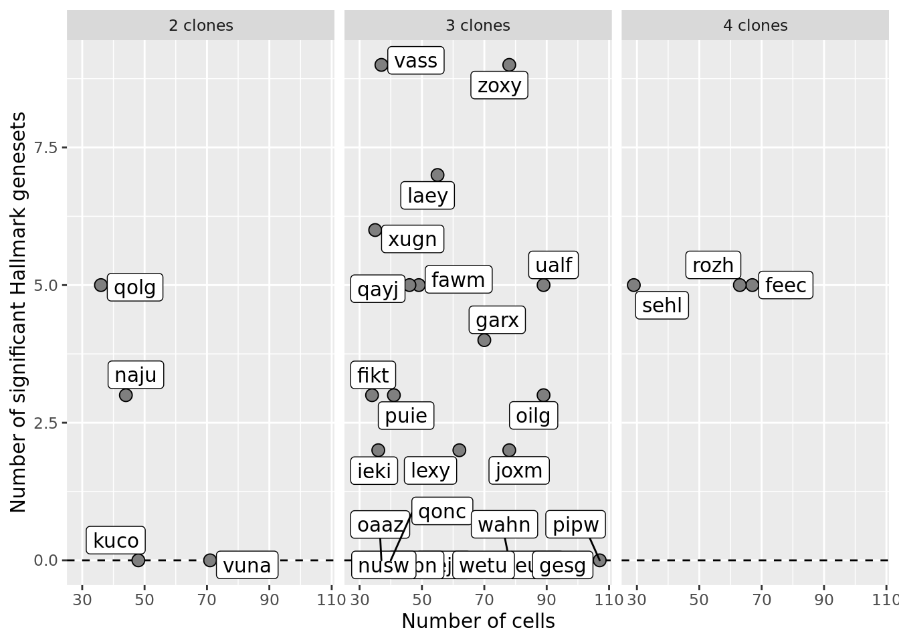
ggsave("figures/differential_expression_cardelino-relax/n_sig_genesets_vs_n_cells_facet_by_num_clones.png",
height = 6.5, width = 9.5)
ggsave("figures/differential_expression_cardelino-relax/n_sig_genesets_vs_n_cells_facet_by_num_clones.pdf",
height = 6.5, width = 9.5)
pp <- plot_grid(p1, p2, labels = "auto", nrow = 2)
ggsave("figures/differential_expression_cardelino-relax/n_sig_genesets_N_de_genes_vs_n_cells_2panel_facet_by_num_clones.png",
height = 10.5, width = 9.5, plot = pp)
ggsave("figures/differential_expression_cardelino-relax/n_sig_genesets_N_de_genes_vs_n_cells_2panel_facet_by_num_clones.pdf",
height = 10.5, width = 9.5, plot = pp)
ggsave("figures/differential_expression_cardelino-relax/n_sig_genesets_N_de_genes_vs_n_cells_2panel_facet_by_num_clones.svg",
height = 10.5, width = 9.5, plot = pp)
## Number of clones vs number of cells
ggplot(df_nbglm_nde, aes(x = n_cells, y = num_clones_total)) +
#geom_smooth(aes(group = 1), colour = "firebrick", method = "lm", level = 0.9) +
geom_hline(yintercept = 0, linetype = 2) +
geom_point(size = 3, shape = 21, fill = "gray50") +
geom_label_repel(aes(label = donor)) +
ylab("Number of inferred clones (total)") +
xlab("Number of cells") +
scale_fill_manual(values = c("dodgerblue", "#CCCCCC", "dodgerblue4"))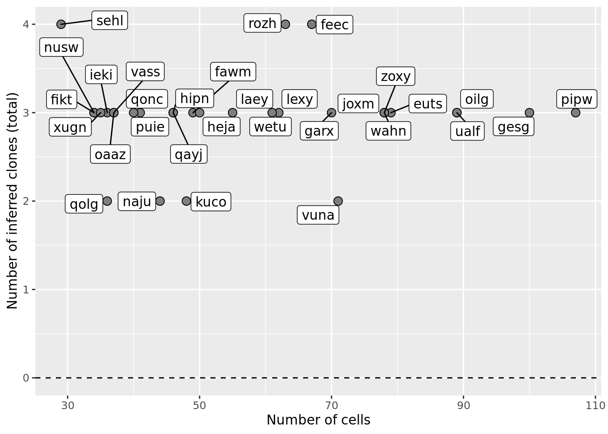
ggsave("figures/differential_expression_cardelino-relax/n_clones_total_vs_n_cells_nogrouping.png",
height = 6.5, width = 6.5)
ggsave("figures/differential_expression_cardelino-relax/n_clones_total_vs_n_cells_nogrouping.pdf",
height = 6.5, width = 6.5)
ggplot(df_nbglm_nde, aes(x = n_cells, y = num_clones_with_cells)) +
#geom_smooth(aes(group = 1), colour = "firebrick", method = "lm", level = 0.9) +
geom_hline(yintercept = 0, linetype = 2) +
geom_point(size = 3, shape = 21, fill = "gray50") +
geom_label_repel(aes(label = donor)) +
ylab("Number of inferred clones (with cells assigned)") +
xlab("Number of cells") +
scale_fill_manual(values = c("dodgerblue", "#CCCCCC", "dodgerblue4"))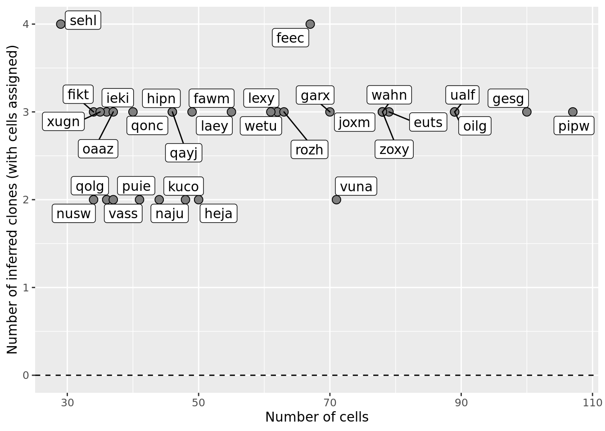
ggsave("figures/differential_expression_cardelino-relax/n_clones_with_cells_vs_n_cells_nogrouping.png",
height = 6.5, width = 6.5)
ggsave("figures/differential_expression_cardelino-relax/n_clones_with_cells_vs_n_cells_nogrouping.pdf",
height = 6.5, width = 6.5)
## Number of DE genes vs number of clones
df_nbglm_nde %>%
ggplot(aes(x = num_clones_total, y = n_de_genes)) +
geom_smooth(aes(group = 1), colour = "firebrick", method = "lm", level = 0.9) +
geom_point(size = 3, shape = 21, fill = "gray50") +
geom_label_repel(aes(label = donor)) +
ylab("Number of DE genes") +
xlab("Number of clones") +
scale_fill_manual(values = c("dodgerblue", "#CCCCCC", "dodgerblue4"))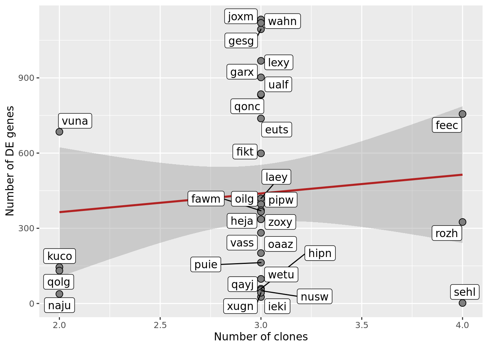
ggsave("figures/differential_expression_cardelino-relax/n_de_genes_vs_n_clones_total.png",
height = 6.5, width = 6.5)
ggsave("figures/differential_expression_cardelino-relax/n_de_genes_vs_n_clones_total.pdf",
height = 6.5, width = 6.5)
## Number of sig genesets vs number of clones
df_nbglm_nde %>%
ggplot(aes(x = num_clones_total, y = n_sig_genesets)) +
geom_smooth(aes(group = 1), colour = "firebrick", method = "lm", level = 0.9) +
geom_point(size = 3, shape = 21, fill = "gray50") +
geom_label_repel(aes(label = donor)) +
ylab("Number of significant Hallmark genesets") +
xlab("Number of clones") +
scale_fill_manual(values = c("dodgerblue", "#CCCCCC", "dodgerblue4"))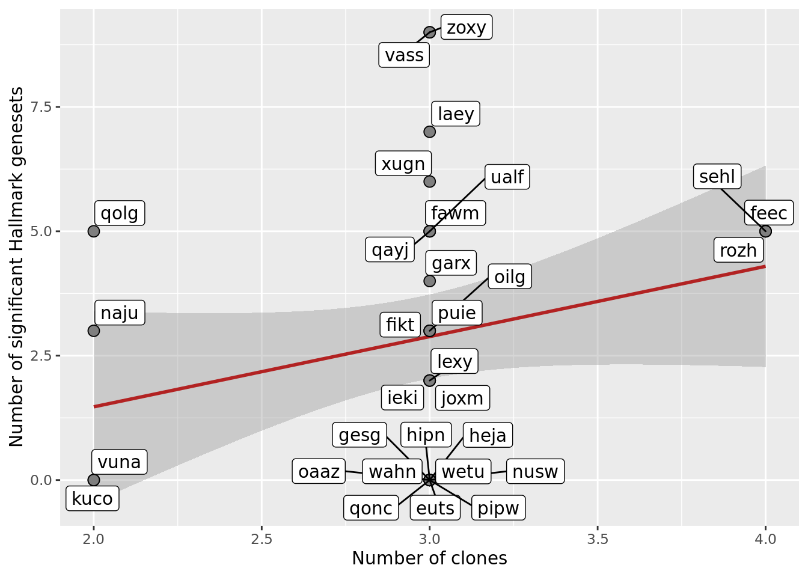
Linking DE to selection
Selection defined using Williams et al 2018 models
The Williams et al 2018 model provides as output a “probability of selection”. We define lines with a probability of selection greater than 0.7 as “selected”, those with probability of selection less than 0.3 as “neutral” and the remaining lines as “undetermined”.
df_williams2018 <- read_csv("data/selection/p1-selection.csv")
colnames(df_williams2018) <- c("donor", "prob_select_williams2018",
"selection_williams2018")
df_nbglm_nde <- left_join(df_nbglm_nde, df_williams2018)
df_williams2018# A tibble: 32 x 3
donor prob_select_williams2018 selection_williams2018
<chr> <dbl> <chr>
1 euts 1 selected
2 fawm 1 selected
3 feec 1.000 selected
4 fikt 1 selected
5 garx 1 selected
6 gesg 0.357 undetermined
7 heja 0.470 undetermined
8 hipn 0.318 undetermined
9 ieki 0.994 selected
10 joxm 1 selected
# … with 22 more rowsWe get confident results from the Williams et al 2018 model for lines with at least 100 somatic variants:
df_high_conf_selection <- df_nbglm_nde %>%
dplyr::filter(num_mutations >= 100) %>%
dplyr::select(donor, num_mutations, n_cells, prob_select_williams2018,
selection_williams2018, n_de_genes, n_sig_genesets) %>%
print(n = Inf)# A tibble: 20 x 7
donor num_mutations n_cells prob_select_wil… selection_willi… n_de_genes
<chr> <int> <int> <dbl> <chr> <int>
1 euts 292 79 1 selected 738
2 fawm 101 49 1 selected 370
3 feec 170 67 1.000 selected 756
4 fikt 142 34 1 selected 599
5 garx 592 70 1 selected 902
6 gesg 157 100 0.357 undetermined 1094
7 heja 192 50 0.470 undetermined 336
8 joxm 612 78 1 selected 1133
9 laey 278 55 0.665 undetermined 419
10 oilg 211 89 0.983 selected 396
11 pipw 233 107 1 selected 372
12 puie 117 41 1 selected 163
13 qolg 120 36 1 selected 131
14 qonc 131 40 0.414 undetermined 832
15 sehl 178 29 0.251 neutral 2
16 ualf 325 89 0.871 selected 835
17 vass 412 37 1.000 selected 282
18 vuna 135 71 0.314 undetermined 685
19 wahn 496 78 0.984 selected 1119
20 xugn 124 35 0.171 neutral 43
# … with 1 more variable: n_sig_genesets <dbl># A tibble: 13 x 7
donor num_mutations n_cells prob_select_wil… selection_willi… n_de_genes
<chr> <int> <int> <dbl> <chr> <int>
1 euts 292 79 1 selected 738
2 fawm 101 49 1 selected 370
3 feec 170 67 1.000 selected 756
4 fikt 142 34 1 selected 599
5 garx 592 70 1 selected 902
6 joxm 612 78 1 selected 1133
7 oilg 211 89 0.983 selected 396
8 pipw 233 107 1 selected 372
9 puie 117 41 1 selected 163
10 qolg 120 36 1 selected 131
11 ualf 325 89 0.871 selected 835
12 vass 412 37 1.000 selected 282
13 wahn 496 78 0.984 selected 1119
# … with 1 more variable: n_sig_genesets <dbl># A tibble: 2 x 7
donor num_mutations n_cells prob_select_wil… selection_willi… n_de_genes
<chr> <int> <int> <dbl> <chr> <int>
1 sehl 178 29 0.251 neutral 2
2 xugn 124 35 0.171 neutral 43
# … with 1 more variable: n_sig_genesets <dbl># A tibble: 5 x 7
donor num_mutations n_cells prob_select_wil… selection_willi… n_de_genes
<chr> <int> <int> <dbl> <chr> <int>
1 gesg 157 100 0.357 undetermined 1094
2 heja 192 50 0.470 undetermined 336
3 laey 278 55 0.665 undetermined 419
4 qonc 131 40 0.414 undetermined 832
5 vuna 135 71 0.314 undetermined 685
# … with 1 more variable: n_sig_genesets <dbl>selected_lines <- dplyr::filter(df_high_conf_selection,
selection_williams2018 == "selected")[["donor"]]
undetermined_lines <- dplyr::filter(df_high_conf_selection,
selection_williams2018 == "undetermined")[["donor"]]
neutral_lines <- dplyr::filter(df_high_conf_selection,
selection_williams2018 == "neutral")[["donor"]]
df_camera_sig_unst %>% dplyr::filter(collection == "H") %>%
dplyr::filter(stat == "logFC", donor %in% neutral_lines) %>%
dplyr::select(NGenes, Direction, PValue, FDR, geneset, contrast, donor) %>%
print(n = Inf)# A tibble: 22 x 7
NGenes Direction PValue FDR geneset contrast donor
<dbl> <chr> <dbl> <dbl> <chr> <chr> <chr>
1 190 Up 4.10e-11 2.05e- 9 HALLMARK_G2M_CHECK… clone2 - c… sehl
2 197 Up 1.45e-10 3.62e- 9 HALLMARK_E2F_TARGE… clone2 - c… sehl
3 181 Up 9.52e- 4 1.59e- 2 HALLMARK_MITOTIC_S… clone2 - c… sehl
4 197 Up 2.33e-16 1.16e-14 HALLMARK_E2F_TARGE… clone3 - c… sehl
5 190 Up 1.01e-14 2.53e-13 HALLMARK_G2M_CHECK… clone3 - c… sehl
6 181 Up 1.92e- 5 3.19e- 4 HALLMARK_MITOTIC_S… clone3 - c… sehl
7 65 Up 3.85e- 3 4.81e- 2 HALLMARK_SPERMATOG… clone3 - c… sehl
8 71 Down 4.85e- 3 4.85e- 2 HALLMARK_COAGULATI… clone3 - c… sehl
9 190 Up 1.50e- 6 7.52e- 5 HALLMARK_G2M_CHECK… clone4 - c… sehl
10 197 Up 4.75e- 6 1.19e- 4 HALLMARK_E2F_TARGE… clone4 - c… sehl
11 197 Down 9.95e- 5 4.98e- 3 HALLMARK_E2F_TARGE… clone4 - c… sehl
12 190 Down 1.16e- 3 2.91e- 2 HALLMARK_G2M_CHECK… clone4 - c… sehl
13 190 Up 3.13e-12 9.75e-11 HALLMARK_G2M_CHECK… clone2 - c… xugn
14 197 Up 3.90e-12 9.75e-11 HALLMARK_E2F_TARGE… clone2 - c… xugn
15 65 Up 1.90e- 4 3.17e- 3 HALLMARK_SPERMATOG… clone2 - c… xugn
16 198 Up 6.40e- 4 8.00e- 3 HALLMARK_MYC_TARGE… clone2 - c… xugn
17 71 Down 6.05e- 9 3.02e- 7 HALLMARK_INTERFERO… clone3 - c… xugn
18 123 Down 2.20e- 6 5.49e- 5 HALLMARK_INTERFERO… clone3 - c… xugn
19 197 Up 7.29e- 5 1.22e- 3 HALLMARK_E2F_TARGE… clone3 - c… xugn
20 190 Up 2.25e- 4 2.81e- 3 HALLMARK_G2M_CHECK… clone3 - c… xugn
21 190 Down 6.76e- 7 3.38e- 5 HALLMARK_G2M_CHECK… clone3 - c… xugn
22 197 Down 1.65e- 6 4.13e- 5 HALLMARK_E2F_TARGE… clone3 - c… xugn df_camera_sig_unst %>% dplyr::filter(collection == "H") %>%
dplyr::filter(stat == "logFC", donor %in% undetermined_lines) %>%
dplyr::select(NGenes, Direction, PValue, FDR, geneset, contrast, donor) %>%
print(n = Inf)# A tibble: 9 x 7
NGenes Direction PValue FDR geneset contrast donor
<dbl> <chr> <dbl> <dbl> <chr> <chr> <chr>
1 197 Up 3.14e- 9 1.57e- 7 HALLMARK_E2F_TARGE… clone2 - cl… laey
2 190 Up 3.64e- 7 9.10e- 6 HALLMARK_G2M_CHECK… clone2 - cl… laey
3 71 Down 1.30e- 3 2.17e- 2 HALLMARK_COAGULATI… clone2 - cl… laey
4 198 Up 2.16e- 3 2.70e- 2 HALLMARK_MYC_TARGE… clone2 - cl… laey
5 197 Up 9.30e-18 4.65e-16 HALLMARK_E2F_TARGE… clone3 - cl… laey
6 190 Up 1.74e-13 4.34e-12 HALLMARK_G2M_CHECK… clone3 - cl… laey
7 181 Up 8.57e- 4 1.16e- 2 HALLMARK_MITOTIC_S… clone3 - cl… laey
8 65 Up 9.30e- 4 1.16e- 2 HALLMARK_SPERMATOG… clone3 - cl… laey
9 23 Down 4.49e- 3 4.49e- 2 HALLMARK_ANGIOGENE… clone3 - cl… laey df_camera_sig_unst %>% dplyr::filter(collection == "H") %>%
dplyr::filter(stat == "logFC", donor %in% selected_lines) %>%
dplyr::select(NGenes, Direction, PValue, FDR, geneset, contrast, donor) %>%
dplyr::mutate(id = paste0(donor, geneset)) %>%
distinct(id, .keep_all = TRUE) %>% group_by(geneset) %>%
summarise(n_sig = sum(FDR < 0.05)) %>% print(n = Inf)# A tibble: 13 x 2
geneset n_sig
<chr> <int>
1 HALLMARK_ANGIOGENESIS 1
2 HALLMARK_APICAL_JUNCTION 1
3 HALLMARK_COAGULATION 1
4 HALLMARK_E2F_TARGETS 10
5 HALLMARK_EPITHELIAL_MESENCHYMAL_TRANSITION 3
6 HALLMARK_G2M_CHECKPOINT 9
7 HALLMARK_INTERFERON_ALPHA_RESPONSE 1
8 HALLMARK_INTERFERON_GAMMA_RESPONSE 1
9 HALLMARK_MITOTIC_SPINDLE 6
10 HALLMARK_MYC_TARGETS_V1 2
11 HALLMARK_PANCREAS_BETA_CELLS 1
12 HALLMARK_REACTIVE_OXIGEN_SPECIES_PATHWAY 1
13 HALLMARK_SPERMATOGENESIS 7NB: * 10 of 13 selected lines have Hallmark genesets significantly enriched at FDR < 5% - all of these are significant for E2F targets and 9 are significant for G2M checkpoint. * euts would be significantly enriched for E2F targets and G2M checkpoints at FDR < 10% (down in clone3 vs clone2). * wahn would have have E2F targets significantly enriched at FDR < 20% (Up in clone3 vs clone2) and G2M checkpoint significant at FDR < 30% * 3 of 7 neutral and undetermined lines have significantly enriched Hallmark genesets at FDR < 5%.
- all 13 selected lines have c2 genesets significantly enriched at FDR < 5%
- 5 of 7 neutral and undetermined lines have c2 genesets significantly enriched at FDR < 5%.
## selection, n_de resid boxplot
df_nbglm_nde %>%
dplyr::mutate(selection = factor(
selection_williams2018, levels = c("neutral", "undetermined", "selected"))) %>%
ggplot(aes(x = selection, y = .resid)) +
geom_violin(aes(fill = selection), alpha = 0.7) +
geom_boxplot(outlier.alpha = 0, width = 0.2) +
ggbeeswarm::geom_quasirandom(aes(fill = selection), size = 3, shape = 21) +
ylab("Number of DE genes (residual from NB GLM)") +
xlab("Inferred selection status (Willams 2018 model)") +
scale_fill_manual(values = c("dodgerblue", "#CCCCCC", "dodgerblue4")) +
coord_flip()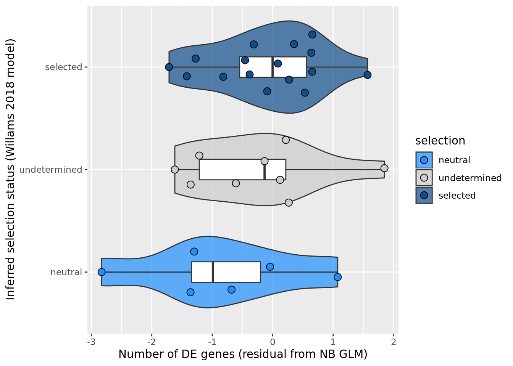
ggsave("figures/differential_expression_cardelino-relax/n_de_resid_selection_williams2018_boxplot.png",
height = 4.5, width = 6.5)
summary(lm(.resid ~ selection_williams2018, data = df_nbglm_nde))
Call:
lm(formula = .resid ~ selection_williams2018, data = df_nbglm_nde)
Residuals:
Min 1Q Median 3Q Max
-1.9742 -0.6067 0.1408 0.5894 2.1238
Coefficients:
Estimate Std. Error t value Pr(>|t|)
(Intercept) -0.8562 0.4205 -2.036 0.0513 .
selection_williams2018selected 0.7494 0.4930 1.520 0.1397
selection_williams2018undetermined 0.5806 0.5428 1.070 0.2940
---
Signif. codes: 0 '***' 0.001 '**' 0.01 '*' 0.05 '.' 0.1 ' ' 1
Residual standard error: 1.03 on 28 degrees of freedom
Multiple R-squared: 0.07645, Adjusted R-squared: 0.01048
F-statistic: 1.159 on 2 and 28 DF, p-value: 0.3284## selection, n_de (sqrt scale) boxplot
df_nbglm_nde %>%
dplyr::mutate(selection = factor(
selection_williams2018, levels = c("neutral", "undetermined", "selected"))) %>%
ggplot(aes(x = selection, y = n_de_genes)) +
geom_violin(aes(fill = selection), alpha = 0.7) +
geom_boxplot(outlier.alpha = 0, width = 0.2) +
ggbeeswarm::geom_quasirandom(aes(fill = selection), size = 3, shape = 21) +
ylab("Number of DE genes") +
xlab("Inferred selection status (Williams 2018 model)") +
scale_y_sqrt(breaks = c(0, 100, 500, 1000, 1500, 2000, 2500)) +
scale_fill_manual(values = c("dodgerblue", "#CCCCCC", "dodgerblue4")) +
coord_flip()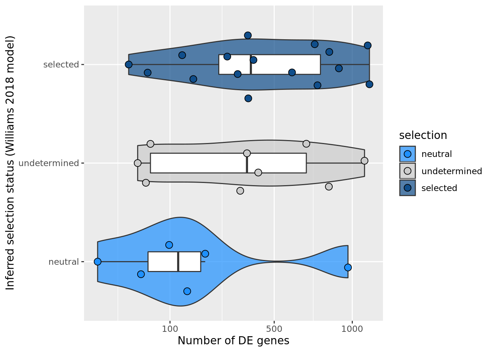
ggsave("figures/differential_expression_cardelino-relax/n_de_sqrt_selection_williams2018_boxplot.png",
height = 5.5, width = 6.5)
## n_de (resids) vs goodness of fit cumul. mutation model
df_nbglm_nde %>%
dplyr::mutate(selection = factor(
selection_williams2018, levels = c("neutral", "undetermined", "selected"))) %>%
ggplot(aes(x = prob_select_williams2018, y = .resid, fill = selection)) +
geom_smooth(aes(group = 1), colour = "firebrick", method = "lm", level = 0.9) +
geom_point(size = 3, shape = 21) +
ylab("Number of DE genes (residual from NB GLM)") +
xlab("Probability of selection (Williams 2018 model)") +
scale_fill_manual(values = c("dodgerblue", "#CCCCCC", "dodgerblue4"))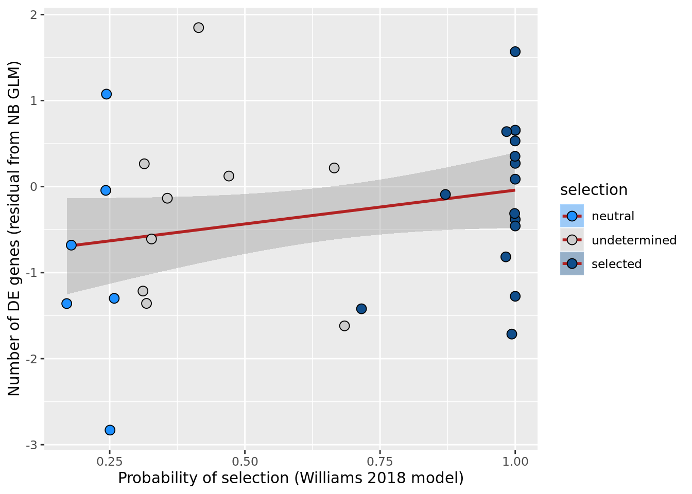
ggsave("figures/differential_expression_cardelino-relax/n_de_resid_vs_prob_selection_williams2018_model.png",
height = 6.5, width = 5.5)
## n_de (sqrt scale) vs goodness of fit cumul. mutation model
df_nbglm_nde %>%
dplyr::mutate(selection = factor(
selection_williams2018, levels = c("neutral", "undetermined", "selected"))) %>%
ggplot(aes(x = prob_select_williams2018, y = n_de_genes, fill = selection)) +
geom_smooth(aes(group = 1), colour = "firebrick", method = "lm", level = 0.9) +
geom_point(size = 3, shape = 21) +
ylab("Number of DE genes") +
xlab("Probability of selection (Williams 2018 model)") +
scale_fill_manual(values = c("dodgerblue", "#CCCCCC", "dodgerblue4"))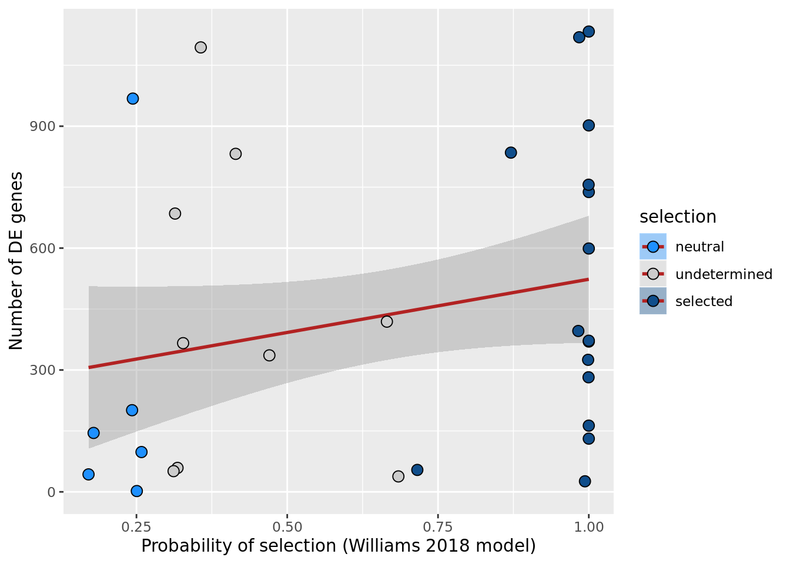
ggsave("figures/differential_expression_cardelino-relax/n_de_sqrt_vs_prob_selection_williams2018_model.png",
height = 6.5, width = 5.5)
## n_de (resids) vs mutational load (all)
df_nbglm_nde %>%
dplyr::mutate(selection = factor(
selection_williams2018, levels = c("neutral", "undetermined", "selected"))) %>%
ggplot(aes(x = nvars_all, y = .resid, fill = selection)) +
geom_smooth(aes(group = 1), colour = "firebrick", method = "lm", level = 0.9) +
geom_point(size = 3, shape = 21) +
ylab("Number of DE genes (residual from NB GLM)") +
xlab("Number of somatic variants") +
scale_fill_manual(values = c("dodgerblue", "#CCCCCC", "dodgerblue4")) +
scale_x_log10(breaks = c(5, 10, 20, 50, 100, 500))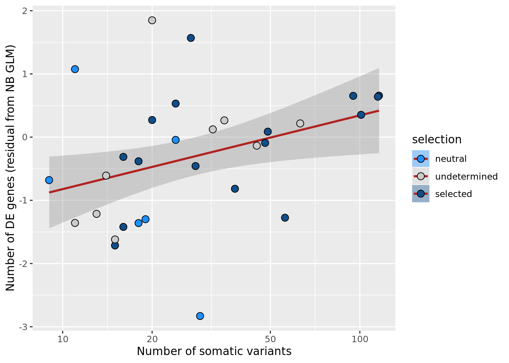
ggsave("figures/differential_expression_cardelino-relax/n_de_resid_selection_williams2018_vs_n_somatic_vars_all.png",
height = 6.5, width = 5.5)
## n_de (sqrt scale) vs mutational load (all)
df_nbglm_nde %>%
dplyr::mutate(selection = factor(
selection_williams2018, levels = c("neutral", "undetermined", "selected"))) %>%
ggplot(aes(x = nvars_all, y = n_de_genes, fill = selection)) +
geom_smooth(aes(group = 1), colour = "firebrick", method = "lm", level = 0.9) +
geom_point(size = 3, shape = 21) +
ylab("Number of DE genes") +
xlab("Number of somatic variants") +
scale_fill_manual(values = c("dodgerblue", "#CCCCCC", "dodgerblue4")) +
scale_x_log10(breaks = c(5, 10, 20, 50, 100, 500)) +
scale_y_sqrt(breaks = c(10, 100, 500, 1000, 1500, 2000, 2500))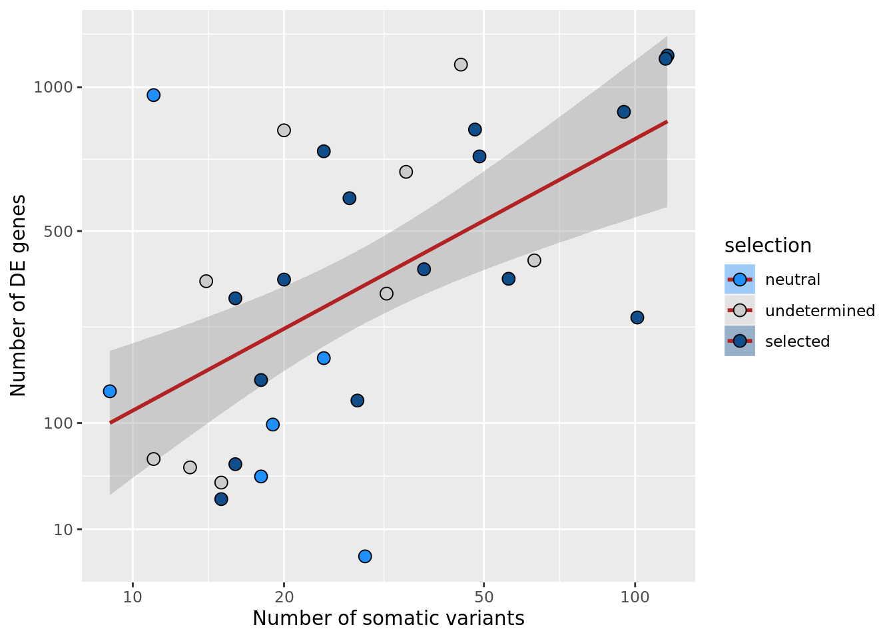
ggsave("figures/differential_expression_cardelino-relax/n_de_sqrt_selection_vs_n_somatic_vars_all.png",
height = 5.5, width = 6.5)
df_nbglm_nde %>%
dplyr::mutate(selection = factor(
selection_williams2018, levels = c("neutral", "undetermined", "selected"))) %>%
ggplot(aes(x = nvars_all, y = prob_select_williams2018, fill = selection)) +
geom_smooth(aes(group = 1), colour = "firebrick", method = "lm", level = 0.9) +
geom_point(size = 3, shape = 21) +
ylab("Probability of selection (Williams 2018 model)") +
xlab("Number of somatic variants") +
coord_cartesian(ylim = c(0, 1)) +
scale_fill_manual(values = c("dodgerblue", "#CCCCCC", "dodgerblue4")) +
scale_x_log10(breaks = c(5, 10, 20, 50, 100, 500))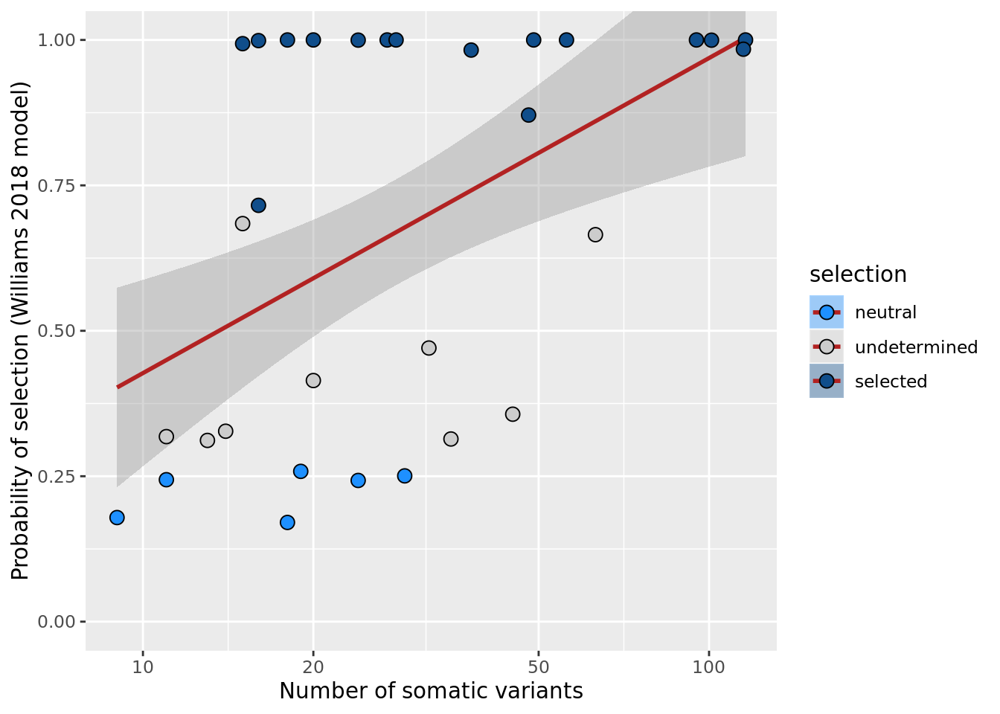
Selection defined using Williams et al 2016 and negative binomial models
## n_de vs n_cells
df_nbglm_nde %>%
dplyr::mutate(selection = factor(
selection, levels = c("neutral", "undetermined", "selected"))) %>%
ggplot(aes(x = n_cells, y = n_de_genes, fill = selection)) +
geom_smooth(aes(group = 1), colour = "firebrick", method = "lm", level = 0.9) +
geom_point(size = 3, shape = 21) +
ylab("Number of DE genes") +
xlab("Number of cells") +
scale_fill_manual(values = c("dodgerblue", "#CCCCCC", "dodgerblue4"))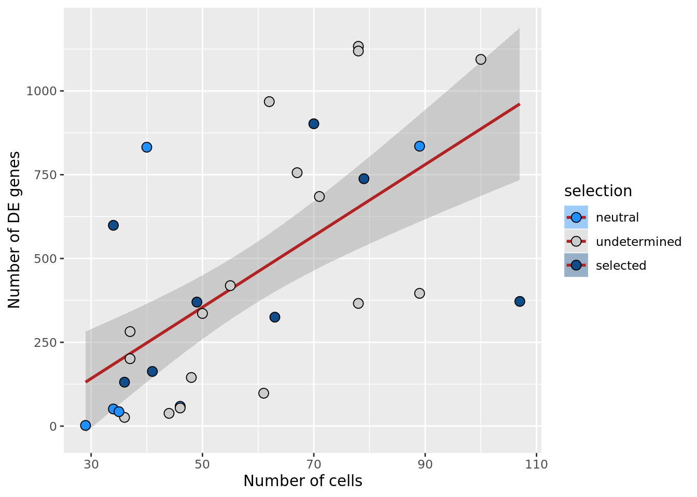
ggsave("figures/differential_expression_cardelino-relax/n_de_genes_vs_n_cells.png",
height = 5.5, width = 5.5)
## selection, n_de resid boxplot
df_nbglm_nde %>%
dplyr::mutate(selection = factor(
selection, levels = c("neutral", "undetermined", "selected"))) %>%
ggplot(aes(x = selection, y = .resid)) +
geom_violin(aes(fill = selection), alpha = 0.7) +
geom_boxplot(outlier.alpha = 0, width = 0.2) +
ggbeeswarm::geom_quasirandom(aes(fill = selection), size = 3, shape = 21) +
ylab("Number of DE genes (residual from NB GLM)") +
xlab("Inferred selection status") +
scale_fill_manual(values = c("dodgerblue", "#CCCCCC", "dodgerblue4")) +
coord_flip()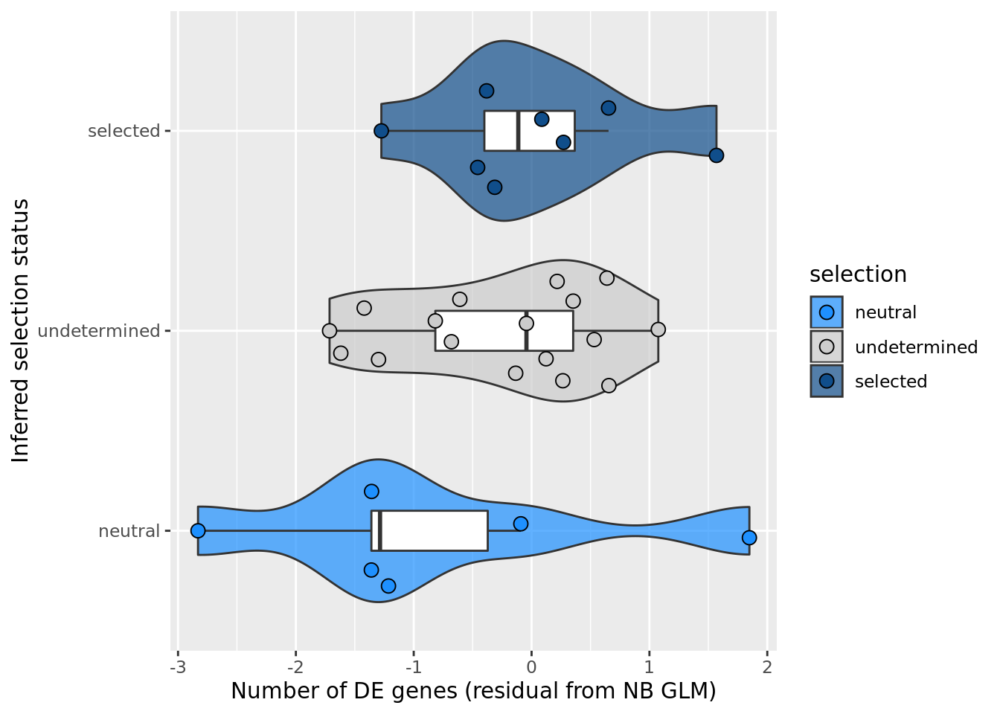
ggsave("figures/differential_expression_cardelino-relax/n_de_resid_selection_boxplot.png",
height = 4.5, width = 6.5)
summary(lm(.resid ~ selection, data = df_nbglm_nde))
Call:
lm(formula = .resid ~ selection, data = df_nbglm_nde)
Residuals:
Min 1Q Median 3Q Max
-1.99630 -0.52453 0.06752 0.62506 2.68235
Coefficients:
Estimate Std. Error t value Pr(>|t|)
(Intercept) -0.8341 0.4198 -1.987 0.0568 .
selectionselected 0.8533 0.5554 1.536 0.1356
selectionundetermined 0.5709 0.4883 1.169 0.2522
---
Signif. codes: 0 '***' 0.001 '**' 0.01 '*' 0.05 '.' 0.1 ' ' 1
Residual standard error: 1.028 on 28 degrees of freedom
Multiple R-squared: 0.07928, Adjusted R-squared: 0.01352
F-statistic: 1.206 on 2 and 28 DF, p-value: 0.3146## selection, n_de (sqrt scale) boxplot
df_nbglm_nde %>%
dplyr::mutate(selection = factor(
selection, levels = c("neutral", "undetermined", "selected"))) %>%
ggplot(aes(x = selection, y = n_de_genes)) +
geom_violin(aes(fill = selection), alpha = 0.7) +
geom_boxplot(outlier.alpha = 0, width = 0.2) +
ggbeeswarm::geom_quasirandom(aes(fill = selection), size = 3, shape = 21) +
ylab("Number of DE genes") +
xlab("Inferred selection status") +
scale_y_sqrt(breaks = c(0, 100, 500, 1000, 1500, 2000, 2500)) +
scale_fill_manual(values = c("dodgerblue", "#CCCCCC", "dodgerblue4")) +
coord_flip()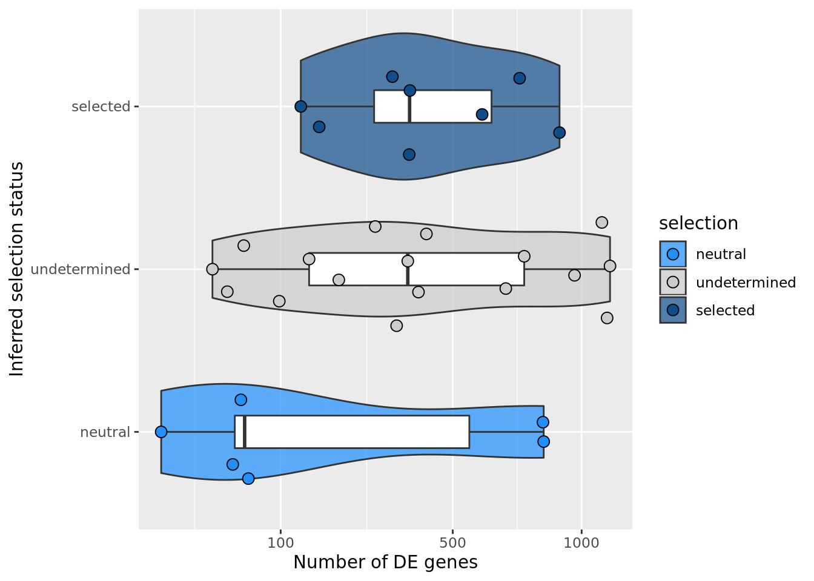
ggsave("figures/differential_expression_cardelino-relax/n_de_sqrt_selection_boxplot.png",
height = 5.5, width = 6.5)
## n_de (resids) vs goodness of fit cumul. mutation model
df_nbglm_nde %>%
dplyr::mutate(selection = factor(
selection, levels = c("neutral", "undetermined", "selected"))) %>%
ggplot(aes(x = rsq_ntrtestr, y = .resid, fill = selection)) +
geom_smooth(aes(group = 1), colour = "firebrick", method = "lm", level = 0.9) +
geom_point(size = 3, shape = 21) +
ylab("Number of DE genes (residual from NB GLM)") +
xlab("Goodness of fit: cumulative mutations") +
scale_fill_manual(values = c("dodgerblue", "#CCCCCC", "dodgerblue4"))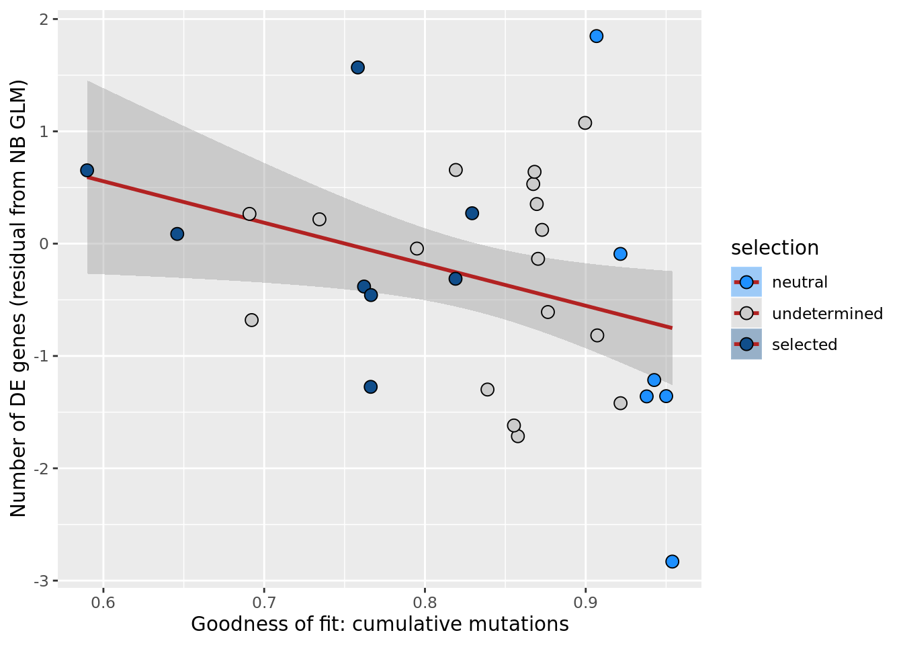
ggsave("figures/differential_expression_cardelino-relax/n_de_resid_selection_vs_gof_cumul_mut_model.png",
height = 6.5, width = 5.5)
## n_de (sqrt scale) vs goodness of fit cumul. mutation model
df_nbglm_nde %>%
dplyr::mutate(selection = factor(
selection, levels = c("neutral", "undetermined", "selected"))) %>%
ggplot(aes(x = rsq_ntrtestr, y = n_de_genes, fill = selection)) +
geom_smooth(aes(group = 1), colour = "firebrick", method = "lm", level = 0.9) +
geom_point(size = 3, shape = 21) +
ylab("Number of DE genes") +
xlab("Goodness of fit: cumulative mutations") +
scale_fill_manual(values = c("dodgerblue", "#CCCCCC", "dodgerblue4"))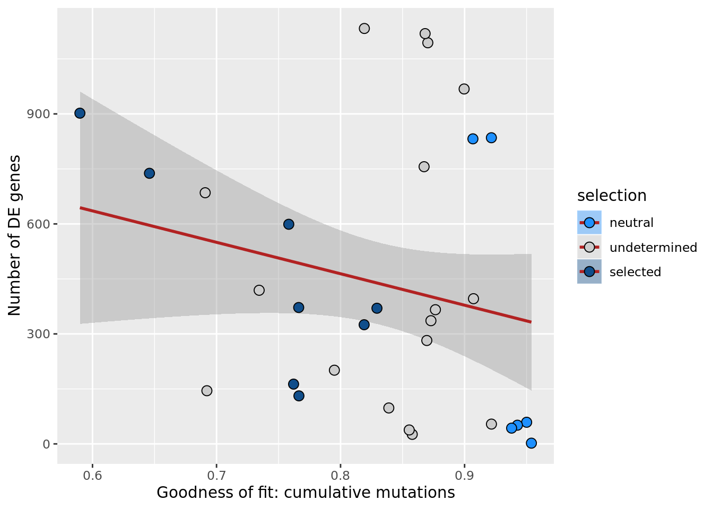
ggsave("figures/differential_expression_cardelino-relax/n_de_sqrt_selection_vs_gof_cumul_mut_model.png",
height = 5.5, width = 6.5)
## n_de (resids) vs goodness of fit NB model
df_nbglm_nde %>%
dplyr::mutate(selection = factor(
selection, levels = c("neutral", "undetermined", "selected"))) %>%
ggplot(aes(x = rsq_negbinfit, y = .resid, fill = selection)) +
geom_smooth(aes(group = 1), colour = "firebrick", method = "lm", level = 0.9) +
geom_point(size = 3, shape = 21) +
ylab("Number of DE genes (residual from NB GLM)") +
xlab("Goodness of fit: negative binomial distribution") +
scale_fill_manual(values = c("dodgerblue", "#CCCCCC", "dodgerblue4"))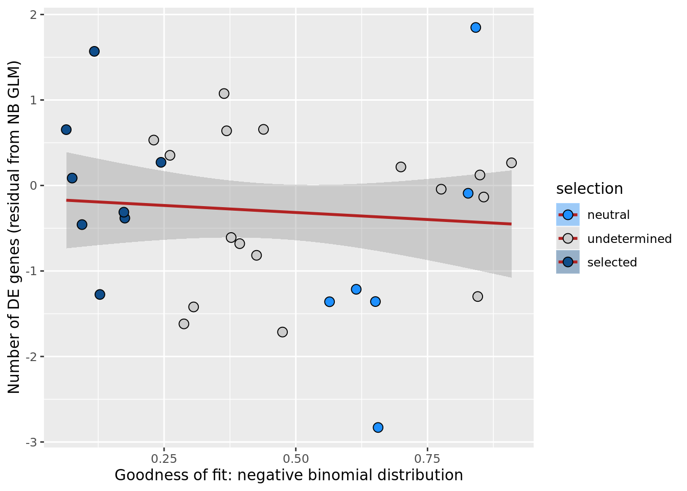
ggsave("figures/differential_expression_cardelino-relax/n_de_resid_selection_vs_gof_negbin_model.png",
height = 5.5, width = 6.5)
## n_de (resids) vs ave goodness of fit from both models
df_nbglm_nde %>%
dplyr::mutate(selection = factor(
selection, levels = c("neutral", "undetermined", "selected"))) %>%
ggplot(aes(x = (rsq_negbinfit + rsq_ntrtestr) / 2, y = .resid, fill = selection)) +
geom_smooth(aes(group = 1), colour = "firebrick", method = "lm", level = 0.9) +
geom_point(size = 3, shape = 21) +
ylab("Number of DE genes (residual from NB GLM)") +
xlab("Ave. goodness of fit:\n negative binomial & cumulative mutations") +
scale_fill_manual(values = c("dodgerblue", "#CCCCCC", "dodgerblue4"))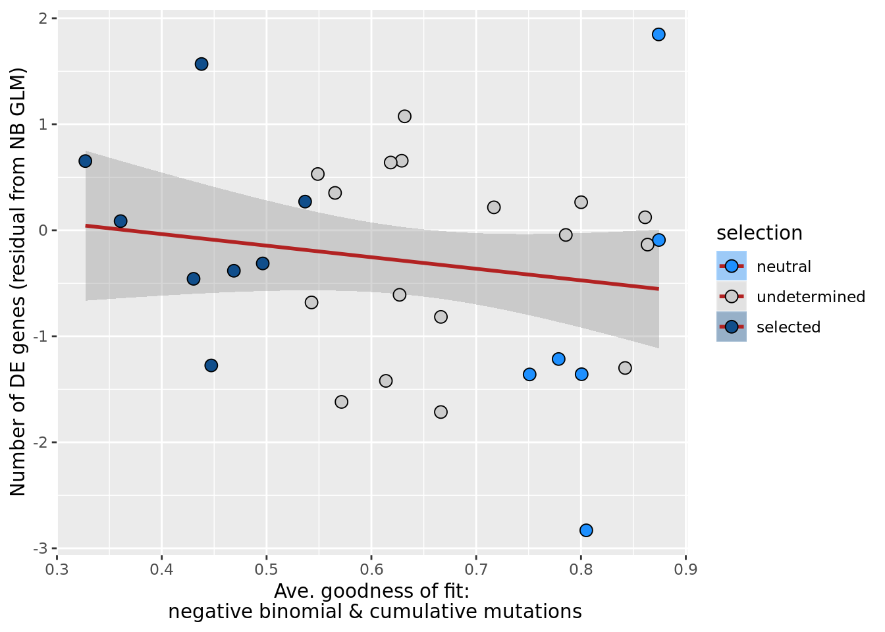
ggsave("figures/differential_expression_cardelino-relax/n_de_resid_selection_vs_ave_gof_2_models.png",
height = 5.5, width = 6.5)
## n_de vs ave goodness of fit from both models
df_nbglm_nde %>%
dplyr::mutate(selection = factor(
selection, levels = c("neutral", "undetermined", "selected"))) %>%
ggplot(aes(x = (rsq_negbinfit + rsq_ntrtestr) / 2, y = n_de_genes,
fill = selection)) +
geom_smooth(aes(group = 1), colour = "firebrick", method = "lm", level = 0.9) +
geom_point(size = 3, shape = 21) +
scale_y_sqrt() +
ylab("Number of DE genes") +
xlab("Ave. goodness of fit:\n negative binomial & cumulative mutations") +
scale_fill_manual(values = c("dodgerblue", "#CCCCCC", "dodgerblue4"))
## n_de (resids) vs mutational load (all)
df_nbglm_nde %>%
dplyr::mutate(selection = factor(
selection, levels = c("neutral", "undetermined", "selected"))) %>%
ggplot(aes(x = nvars_all, y = .resid, fill = selection)) +
geom_smooth(aes(group = 1), colour = "firebrick", method = "lm", level = 0.9) +
geom_point(size = 3, shape = 21) +
ylab("Number of DE genes (residual from NB GLM)") +
xlab("Number of somatic variants") +
scale_fill_manual(values = c("dodgerblue", "#CCCCCC", "dodgerblue4")) +
scale_x_log10(breaks = c(5, 10, 20, 50, 100, 500))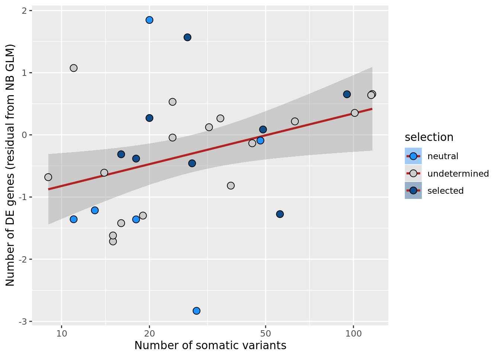
ggsave("figures/differential_expression_cardelino-relax/n_de_resid_selection_vs_n_somatic_vars_all.png",
height = 6.5, width = 5.5)
## n_de (sqrt scale) vs mutational load (all)
df_nbglm_nde %>%
dplyr::mutate(selection = factor(
selection, levels = c("neutral", "undetermined", "selected"))) %>%
ggplot(aes(x = nvars_all, y = n_de_genes, fill = selection)) +
geom_smooth(aes(group = 1), colour = "firebrick", method = "lm", level = 0.9) +
geom_point(size = 3, shape = 21) +
ylab("Number of DE genes") +
xlab("Number of somatic variants") +
scale_fill_manual(values = c("dodgerblue", "#CCCCCC", "dodgerblue4")) +
scale_x_log10(breaks = c(5, 10, 20, 50, 100, 500)) +
scale_y_sqrt(breaks = c(10, 100, 500, 1000, 1500, 2000, 2500))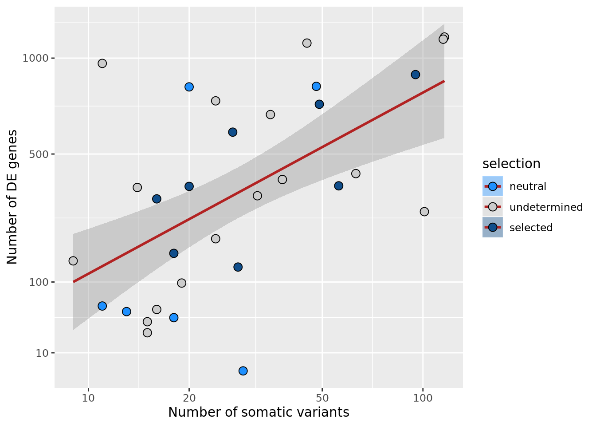
ggsave("figures/differential_expression_cardelino-relax/n_de_sqrt_selection_vs_n_somatic_vars_all.png",
height = 5.5, width = 6.5)
## n_de (resids) vs mutational load (missense)
df_nbglm_nde %>%
dplyr::mutate(selection = factor(
selection, levels = c("neutral", "undetermined", "selected"))) %>%
ggplot(aes(x = missense, y = .resid, fill = selection)) +
geom_smooth(aes(group = 1), colour = "firebrick", method = "lm", level = 0.9) +
geom_point(size = 3, shape = 21) +
ylab("Number of DE genes (residual from NB GLM)") +
xlab("Number of somatic missense variants") +
scale_fill_manual(values = c("dodgerblue", "#CCCCCC", "dodgerblue4")) +
scale_x_log10(breaks = c(5, 10, 20, 50, 100, 500))
ggsave("figures/differential_expression_cardelino-relax/n_de_resid_selection_vs_n_somatic_vars_missense.png",
height = 5.5, width = 6.5)
## n_de (resids) vs mutational load (missense, nonsense, splicing)
df_nbglm_nde %>%
dplyr::mutate(selection = factor(
selection, levels = c("neutral", "undetermined", "selected"))) %>%
ggplot(aes(x = nvars_misnonspli, y = .resid, fill = selection)) +
geom_smooth(aes(group = 1), colour = "firebrick", method = "lm", level = 0.9) +
geom_point(size = 3, shape = 21) +
ylab("Number of DE genes (residual from NB GLM)") +
xlab("Number of missense, nonsense & splicing variants") +
scale_fill_manual(values = c("dodgerblue", "#CCCCCC", "dodgerblue4")) +
scale_x_log10(breaks = c(5, 10, 20, 50, 100, 500))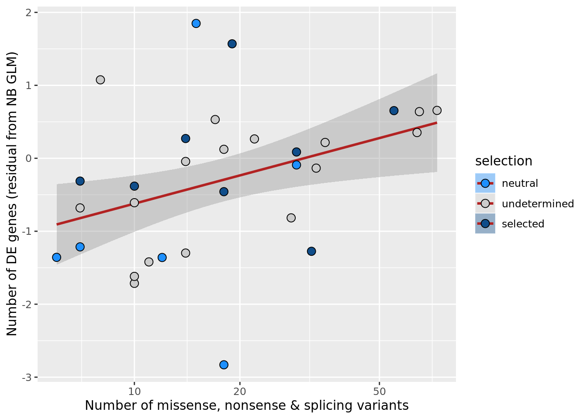
ggsave("figures/differential_expression_cardelino-relax/n_de_resid_selection_vs_n_somatic_vars_misnonspli.png",
height = 6.5, width = 5.5)
df_nbglm_nde %>%
dplyr::mutate(selection = factor(
selection, levels = c("neutral", "undetermined", "selected"))) %>%
ggplot(aes(x = nvars_all, y = rsq_ntrtestr, fill = selection)) +
geom_smooth(aes(group = 1), colour = "firebrick", method = "lm", level = 0.9) +
geom_point(size = 3, shape = 21) +
ylab("Goodness of fit: cumulative mutations ") +
xlab("Number of somatic variants") +
scale_fill_manual(values = c("dodgerblue", "#CCCCCC", "dodgerblue4")) +
scale_x_log10(breaks = c(5, 10, 20, 50, 100, 500))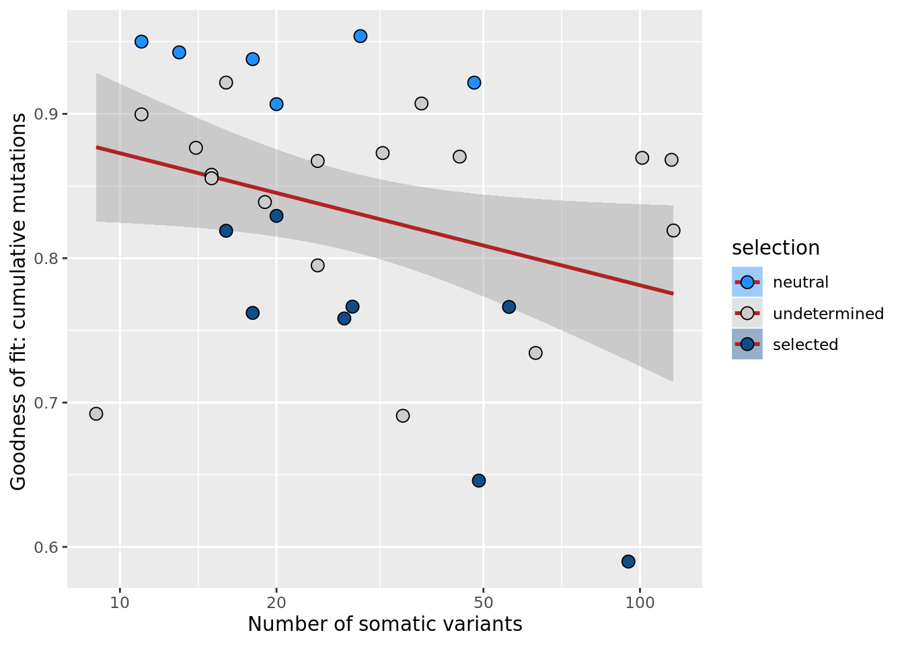
ggsave("figures/differential_expression_cardelino-relax/gof_cumul_mut_model_vs_n_somatic_vars.png",
height = 6.5, width = 5.5)We can also check the relationship between the number of somatic variants and evidence for selection as immediately above, but flipping the relationship.
df_nbglm_nde %>%
dplyr::mutate(selection = factor(
selection, levels = c("neutral", "undetermined", "selected"))) %>%
ggplot(aes(x = rsq_ntrtestr, y = nvars_all, fill = selection)) +
geom_smooth(aes(group = 1), colour = "firebrick", method = "lm", level = 0.9) +
geom_point(size = 3, shape = 21) +
xlab("Goodness of fit: cumulative mutations ") +
ylab(bquote("Number of somatic variants (log"[10]~ "scale)")) +
scale_fill_manual(values = c("dodgerblue", "#CCCCCC", "dodgerblue4")) +
scale_y_log10(breaks = c(5, 10, 20, 50, 100, 500))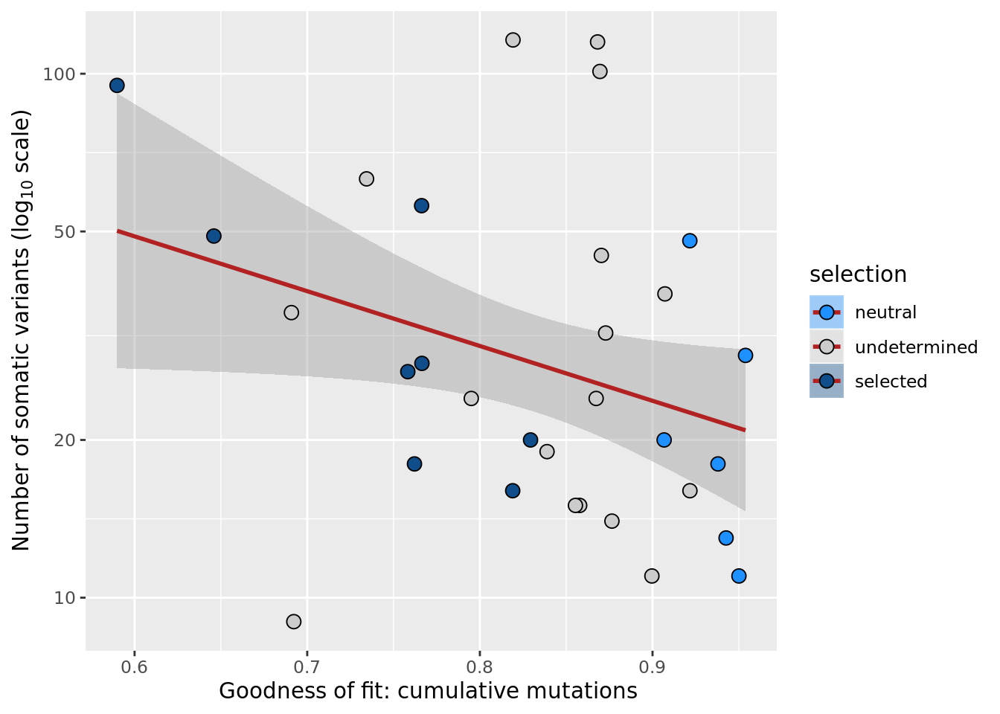
ggsave("figures/differential_expression_cardelino-relax/n_somatic_vars_vs_gof_cumul_mut_model.png",
height = 6.5, width = 5.5)
df_nbglm_nde %>%
dplyr::mutate(selection = factor(
selection, levels = c("neutral", "undetermined", "selected"))) %>%
ggplot(aes(x = rsq_negbinfit, y = nvars_all, fill = selection)) +
geom_smooth(aes(group = 1), colour = "firebrick", method = "lm", level = 0.9) +
geom_point(size = 3, shape = 21) +
xlab("Goodness of fit: negative binomial ") +
ylab(bquote("Number of somatic variants (log"[10]~ "scale)")) +
scale_fill_manual(values = c("dodgerblue", "#CCCCCC", "dodgerblue4")) +
scale_y_log10(breaks = c(5, 10, 20, 50, 100, 500))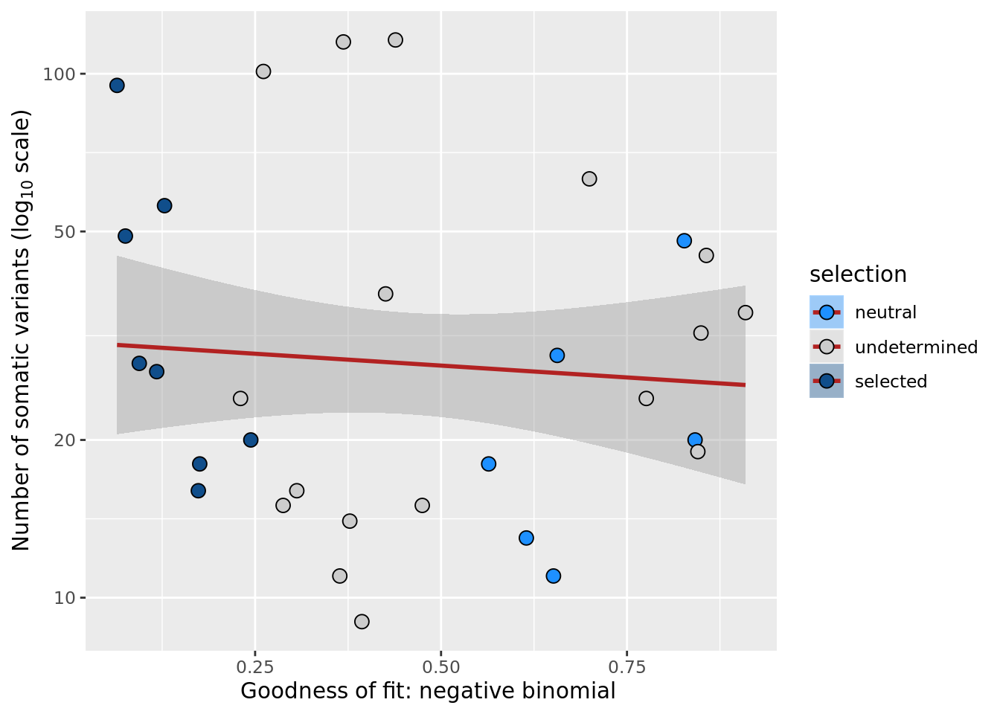
ggsave("figures/differential_expression_cardelino-relax/n_somatic_vars_vs_gof_cumul_mut_model.png",
height = 6.5, width = 5.5)
df_nbglm_nde %>%
dplyr::mutate(selection = factor(
selection, levels = c("neutral", "undetermined", "selected"))) %>%
ggplot(aes(x = (rsq_negbinfit + rsq_ntrtestr) / 2, y = nvars_all,
fill = selection)) +
geom_smooth(aes(group = 1), colour = "firebrick", method = "lm", level = 0.9) +
geom_point(size = 3, shape = 21) +
xlab("Ave. goodness of fit:\n negative binomial & cumulative mutations") +
ylab(bquote("Number of somatic variants (log"[10]~ "scale)")) +
scale_fill_manual(values = c("dodgerblue", "#CCCCCC", "dodgerblue4")) +
scale_y_log10(breaks = c(5, 10, 20, 50, 100, 500))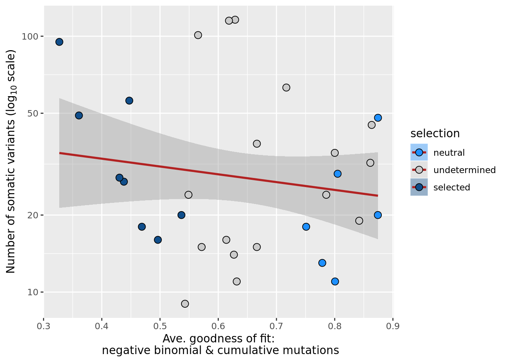
ggsave("figures/differential_expression_cardelino-relax/n_somatic_vars_vs_ave_gof_two_models.png",
height = 6.5, width = 5.5)p1 <- df_nbglm_nde %>%
dplyr::mutate(selection = factor(
selection, levels = c("neutral", "undetermined", "selected"))) %>%
ggplot(aes(x = rsq_ntrtestr, y = .resid,
fill = selection)) +
geom_smooth(aes(group = 1), colour = "firebrick", method = "lm", level = 0.9) +
geom_point(size = 3, shape = 21) +
ylab("Number of DE genes (residual from NB GLM)") +
xlab("Goodness of fit: cumulative mutations ") +
scale_fill_manual(values = c("dodgerblue", "#CCCCCC", "dodgerblue4"))
p2 <- df_nbglm_nde %>%
dplyr::mutate(selection = factor(
selection, levels = c("neutral", "undetermined", "selected"))) %>%
ggplot(aes(x = nvars_all, y = rsq_ntrtestr,
fill = selection)) +
geom_smooth(aes(group = 1), colour = "firebrick", method = "lm", level = 0.9) +
geom_point(size = 3, shape = 21) +
xlab(bquote("Number of somatic variants (log"[10]~ "scale)")) +
ylab("Goodness of fit: cumulative mutations ") +
scale_fill_manual(values = c("dodgerblue", "#CCCCCC", "dodgerblue4")) +
scale_x_log10(breaks = c(5, 10, 20, 50, 100, 500))
p3 <- df_nbglm_nde %>%
dplyr::mutate(selection = factor(
selection, levels = c("neutral", "undetermined", "selected"))) %>%
ggplot(aes(x = nvars_all, y = .resid,
fill = selection)) +
geom_smooth(aes(group = 1), colour = "firebrick", method = "lm", level = 0.9) +
geom_point(size = 3, shape = 21) +
ylab("Number of DE genes (residual from NB GLM)") +
xlab(bquote("Number of somatic variants (log"[10]~ "scale)")) +
scale_fill_manual(values = c("dodgerblue", "#CCCCCC", "dodgerblue4")) +
scale_x_log10(breaks = c(5, 10, 20, 50, 100, 500))
plot_grid(p1, p2, p3, nrow = 1, labels = "auto")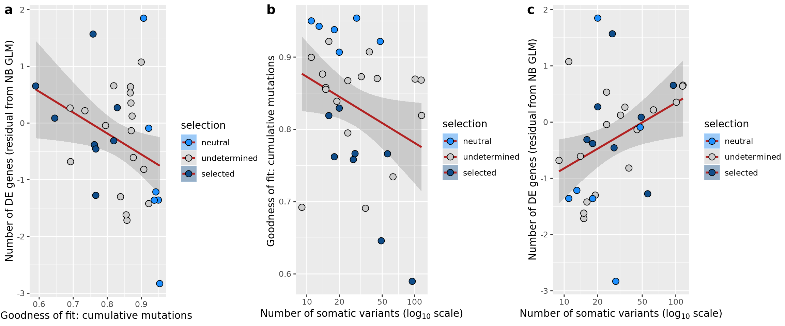
p1 <- df_nbglm_nde %>%
dplyr::mutate(selection = factor(
selection, levels = c("neutral", "undetermined", "selected"))) %>%
ggplot(aes(x = (rsq_ntrtestr + rsq_negbinfit) / 2, y = .resid,
fill = selection)) +
geom_smooth(aes(group = 1), colour = "firebrick", method = "lm", level = 0.9) +
geom_point(size = 3, shape = 21) +
ylab("Number of DE genes (residual from NB GLM)") +
xlab("Ave. goodness of fit:\n negative binomial & cumulative mutations") +
scale_fill_manual(values = c("dodgerblue", "#CCCCCC", "dodgerblue4"))
p2 <- df_nbglm_nde %>%
dplyr::mutate(selection = factor(
selection, levels = c("neutral", "undetermined", "selected"))) %>%
ggplot(aes(x = nvars_all, y = (rsq_ntrtestr + rsq_negbinfit) / 2,
fill = selection)) +
geom_smooth(aes(group = 1), colour = "firebrick", method = "lm", level = 0.9) +
geom_point(size = 3, shape = 21) +
xlab(bquote("Number of somatic variants (log"[10]~ "scale)")) +
ylab("Ave. goodness of fit:\n negative binomial & cumulative mutations") +
scale_fill_manual(values = c("dodgerblue", "#CCCCCC", "dodgerblue4")) +
scale_x_log10(breaks = c(5, 10, 20, 50, 100, 500))
p3 <- df_nbglm_nde %>%
dplyr::mutate(selection = factor(
selection, levels = c("neutral", "undetermined", "selected"))) %>%
ggplot(aes(x = nvars_all, y = .resid,
fill = selection)) +
geom_smooth(aes(group = 1), colour = "firebrick", method = "lm", level = 0.9) +
geom_point(size = 3, shape = 21) +
ylab("Number of DE genes (residual from NB GLM)") +
xlab(bquote("Number of somatic variants (log"[10]~ "scale)")) +
scale_fill_manual(values = c("dodgerblue", "#CCCCCC", "dodgerblue4")) +
scale_x_log10(breaks = c(5, 10, 20, 50, 100, 500))
plot_grid(p1, p2, p3, nrow = 1, labels = "auto")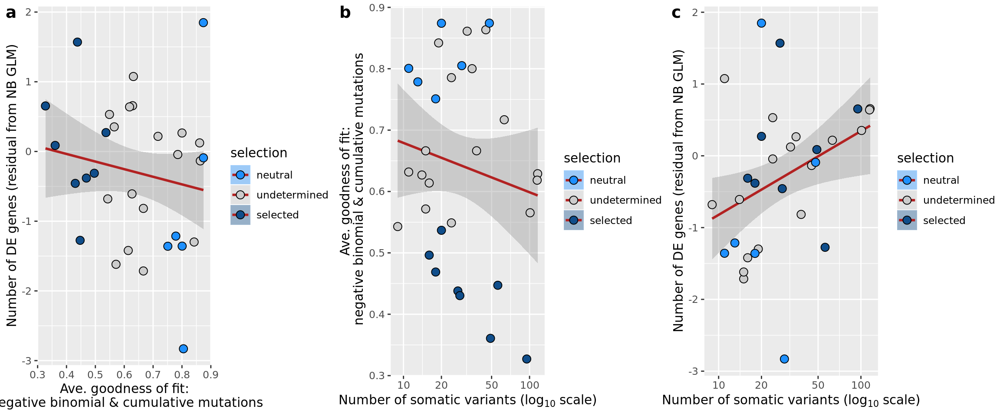
Linking DE to assignment accuracy
Simulation results provide us with an estimate of the assignment accuracy for each line.
We load the simulation results for individual lines.
get_prob_label <- function(X){
max_idx <- rep(0, nrow(X))
for (j in seq_len(nrow(X))) {
max_idx[j] <- which.max(X[j, ])
}
max_idx
}
get_prob_value <- function(X, mode = "best") {
max_val <- rep(0, nrow(X))
for (i in seq_len(nrow(X))) {
sorted_val <- sort(X[i,], decreasing = TRUE)
if (mode == "delta") {
max_val[i] <- sorted_val[1] - sorted_val[2]
} else if (mode == "second") {
max_val[i] <- sorted_val[2]
} else {#default mode: best
max_val[i] <- sorted_val[1]
}
}
max_val
}
all_files <- paste0(donors, ".simulate.rds")
assign_0 <- matrix(0, nrow = 500, ncol = length(donors))
assign_1 <- matrix(0, nrow = 500, ncol = length(donors))
prob_all <- matrix(0, nrow = 500, ncol = length(donors))
for (i in seq_len(length(all_files))) {
afile <- all_files[i]
sim_dat <- readRDS(file.path("data", "simulations", afile))
assign_0[, i] <- get_prob_label(sim_dat$I_sim)
assign_1[, i] <- get_prob_label(sim_dat$prob_Gibbs)
prob_all[, i] <- get_prob_value(sim_dat$prob_Gibbs, mode = "best")
}
precision_simu <- rep(0, length(donors))
for (i in seq_len(length(donors))) {
idx <- prob_all[, i] > 0.5
precision_simu[i] <- mean(assign_0[idx, i] == assign_1[idx, i])
}Read results from real data as well and form a data frame for plotting.
all_files <- paste0("cardelino_results_carderelax.", donors,
".filt_lenient.cell_coverage_sites.rds")
n_sites <- rep(0, length(donors))
n_clone <- rep(0, length(donors))
recall_all <- rep(0, length(donors))
for (i in seq_len(length(all_files))) {
afile <- all_files[i]
carde_dat <- readRDS(file.path("data", "cell_assignment", afile))
n_sites[i] <- nrow(carde_dat$D)
n_clone[i] <- ncol(carde_dat$prob_mat)
recall_all[i] <- mean(get_prob_value(carde_dat$prob_mat, mode = "best") > 0.5)
}
df <- data.frame(line = donors, n_sites = n_sites, n_clone = n_clone,
recall_real = recall_all, recall_simu = colMeans(prob_all > 0.5),
precision_simu = precision_simu)We can now look at the relationship between the number of DE genes detected per line and the assignment accuracy and assignment rate per line.
df <- inner_join(df, dplyr::mutate(df_nbglm_nde, line = donor))
## n_de (resids) vs assignment accuracy
p1 <- df %>%
dplyr::mutate(selection = factor(
selection, levels = c("neutral", "undetermined", "selected"))) %>%
ggplot(aes(x = precision_simu, y = .resid, fill = selection)) +
geom_smooth(aes(group = 1), colour = "firebrick", method = "lm", level = 0.9) +
geom_point(size = 3, shape = 21) +
ylab("Number of DE genes (residual from NB GLM)") +
xlab("Assignment accuracy (precision) from simulations") +
scale_fill_manual(values = c("dodgerblue", "#CCCCCC", "dodgerblue4"))
ggsave("figures/differential_expression_cardelino-relax/n_de_resid_selection_vs_sim_assign_acc.png",
plot = p1, height = 5.5, width = 6.5)
## n_de (resids) vs assignment rate
p2 <- df %>%
dplyr::mutate(selection = factor(
selection, levels = c("neutral", "undetermined", "selected"))) %>%
ggplot(aes(x = recall_simu, y = .resid, fill = selection)) +
geom_smooth(aes(group = 1), colour = "firebrick", method = "lm", level = 0.9) +
geom_point(size = 3, shape = 21) +
ylab("Number of DE genes (residual from NB GLM)") +
xlab("Assignment rate (recall) from simulations") +
scale_fill_manual(values = c("dodgerblue", "#CCCCCC", "dodgerblue4"))
ggsave("figures/differential_expression_cardelino-relax/n_de_resid_selection_vs_sim_assign_rate.png",
plot = p2, height = 5.5, width = 6.5)
p3 <- plot_grid(p1, p2, labels = "auto", nrow = 2)
ggsave("figures/differential_expression_cardelino-relax/n_de_resid_selection_vs_sim_assign_acc_rate_combined.png",
plot = p3, height = 10, width = 6.5)
p3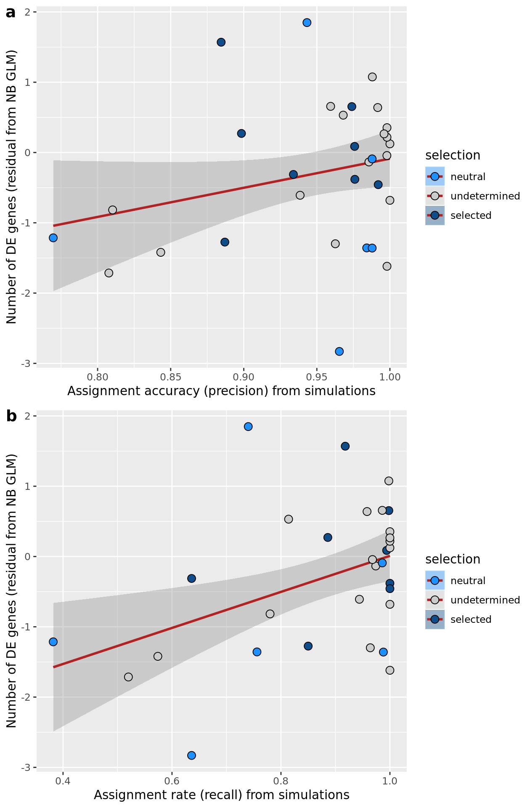
Linking DE to multiple explanatory factors
Let us fit a NB GLM to regress number of DE genes observed per line against number of cells, goodness of fit of selection models, number of somatic variants, assignment accuracy (from simulations) and assignment rate (observed) per line.
First we can look at fitting different combinations of these explanatory variables and do model selection using AIC (Akaike Information Criterion).
broom::glance(MASS::glm.nb(
n_de_genes ~ n_cells + rsq_negbinfit + rsq_ntrtestr + nvars_all
+ recall_real + precision_simu, data = df))# A tibble: 1 x 7
null.deviance df.null logLik AIC BIC deviance df.residual
<dbl> <int> <dbl> <dbl> <dbl> <dbl> <int>
1 51.8 30 -212. 441. 452. 34.7 24broom::glance(MASS::glm.nb(
n_de_genes ~ log10(n_cells) + rsq_negbinfit + rsq_ntrtestr + nvars_all
+ recall_real + precision_simu, data = df))# A tibble: 1 x 7
null.deviance df.null logLik AIC BIC deviance df.residual
<dbl> <int> <dbl> <dbl> <dbl> <dbl> <int>
1 52.8 30 -212. 440. 452. 34.6 24broom::glance(MASS::glm.nb(
n_de_genes ~ sqrt(n_cells) + rsq_negbinfit + rsq_ntrtestr + nvars_all
+ recall_real + precision_simu, data = df))# A tibble: 1 x 7
null.deviance df.null logLik AIC BIC deviance df.residual
<dbl> <int> <dbl> <dbl> <dbl> <dbl> <int>
1 52.3 30 -212. 440. 452. 34.7 24broom::glance(MASS::glm.nb(
n_de_genes ~ log10(n_cells) + rsq_negbinfit + rsq_ntrtestr + sqrt(nvars_all)
+ recall_real + precision_simu, data = df))# A tibble: 1 x 7
null.deviance df.null logLik AIC BIC deviance df.residual
<dbl> <int> <dbl> <dbl> <dbl> <dbl> <int>
1 53.1 30 -212. 440. 451. 34.6 24broom::glance(MASS::glm.nb(
n_de_genes ~ log10(n_cells) + rsq_negbinfit + rsq_ntrtestr + log10(nvars_all)
+ recall_real + precision_simu, data = df))# A tibble: 1 x 7
null.deviance df.null logLik AIC BIC deviance df.residual
<dbl> <int> <dbl> <dbl> <dbl> <dbl> <int>
1 53.4 30 -212. 440. 451. 34.6 24broom::glance(MASS::glm.nb(
n_de_genes ~ log10(n_cells) + rsq_ntrtestr + nvars_all
+ recall_real + precision_simu, data = df))# A tibble: 1 x 7
null.deviance df.null logLik AIC BIC deviance df.residual
<dbl> <int> <dbl> <dbl> <dbl> <dbl> <int>
1 52.8 30 -212. 438. 448. 34.6 25broom::glance(MASS::glm.nb(
n_de_genes ~ log10(n_cells) + rsq_ntrtestr + nvars_all
+ recall_real, data = df))# A tibble: 1 x 7
null.deviance df.null logLik AIC BIC deviance df.residual
<dbl> <int> <dbl> <dbl> <dbl> <dbl> <int>
1 51.6 30 -212. 437. 446. 34.7 26# A tibble: 1 x 7
null.deviance df.null logLik AIC BIC deviance df.residual
<dbl> <int> <dbl> <dbl> <dbl> <dbl> <int>
1 51.6 30 -212. 435. 442. 34.7 27# A tibble: 1 x 7
null.deviance df.null logLik AIC BIC deviance df.residual
<dbl> <int> <dbl> <dbl> <dbl> <dbl> <int>
1 51.0 30 -213. 435. 443. 34.7 27# A tibble: 1 x 7
null.deviance df.null logLik AIC BIC deviance df.residual
<dbl> <int> <dbl> <dbl> <dbl> <dbl> <int>
1 51.0 30 -213. 433. 439. 34.7 28# A tibble: 1 x 7
null.deviance df.null logLik AIC BIC deviance df.residual
<dbl> <int> <dbl> <dbl> <dbl> <dbl> <int>
1 48.2 30 -214. 434. 438. 34.9 29The preferred model based on AIC values is one fitting log10-scale number of cells and number of somatic variants as predictor variables.
nbglm_nde_allfacts <- MASS::glm.nb(
n_de_genes ~ log10(n_cells) + rsq_negbinfit + rsq_ntrtestr + nvars_all
+ recall_real + precision_simu, data = df)
broom::tidy(nbglm_nde_allfacts)# A tibble: 7 x 5
term estimate std.error statistic p.value
<chr> <dbl> <dbl> <dbl> <dbl>
1 (Intercept) -1.01 3.95 -0.255 0.799
2 log10(n_cells) 3.33 1.08 3.08 0.00204
3 rsq_negbinfit -0.000699 0.647 -0.00108 0.999
4 rsq_ntrtestr -1.58 2.00 -0.793 0.428
5 nvars_all 0.00638 0.00575 1.11 0.267
6 recall_real -0.771 1.52 -0.507 0.612
7 precision_simu 3.05 3.34 0.913 0.361 nbglm_nde_selectfacts <- MASS::glm.nb(
n_de_genes ~ log10(n_cells) + nvars_all, data = df)
broom::tidy(nbglm_nde_selectfacts)# A tibble: 3 x 5
term estimate std.error statistic p.value
<chr> <dbl> <dbl> <dbl> <dbl>
1 (Intercept) -0.0343 1.78 -0.0193 0.985
2 log10(n_cells) 3.25 1.06 3.07 0.00215
3 nvars_all 0.00773 0.00549 1.41 0.159 # A tibble: 1 x 7
null.deviance df.null logLik AIC BIC deviance df.residual
<dbl> <int> <dbl> <dbl> <dbl> <dbl> <int>
1 51.0 30 -213. 433. 439. 34.7 28Linking pathway results to selection
Not yet implemented
Compare pathway results to clone prevalence
Hallmark gene sets. Not yet implemented.
Write DE and pathway results to file
## Write DE results to file:
for (don in names(de_res$qlf_list)) {
de_res$qlf_list[[don]]$table %>%
dplyr::mutate(gene = rownames(.), FDR = IHW::adj_pvalues(IHW::ihw(PValue, logCPM, alpha = 0.1))) %>%
dplyr::arrange(FDR) %>% write_tsv(
paste0("output/differential_expression_cardelino-relax/", don, "_qlf_de_results.tsv"))
}
for (don in names(de_res$camera$H)) {
for (cntrst in names(de_res$camera$H[[don]])) {
de_res$camera$H[[don]][[cntrst]]$logFC %>%
dplyr::mutate(geneset = rownames(.)) %>%
dplyr::arrange(FDR) %>% write_tsv(
paste0("output/differential_expression_cardelino-relax/", don, "_camera_hallmark_geneset_results_", cntrst, ".tsv"))
}
}
─ Session info ──────────────────────────────────────────────────────────
setting value
version R version 3.6.0 (2019-04-26)
os Ubuntu 18.04.3 LTS
system x86_64, linux-gnu
ui X11
language (EN)
collate en_AU.UTF-8
ctype en_AU.UTF-8
tz Australia/Melbourne
date 2019-10-30
─ Packages ──────────────────────────────────────────────────────────────
package * version date lib
AnnotationDbi * 1.46.1 2019-08-20 [1]
ape 5.3 2019-03-17 [1]
assertthat 0.2.1 2019-03-21 [1]
backports 1.1.4 2019-04-10 [1]
beeswarm 0.2.3 2016-04-25 [1]
Biobase * 2.44.0 2019-05-02 [1]
BiocGenerics * 0.30.0 2019-05-02 [1]
BiocNeighbors 1.2.0 2019-05-02 [1]
BiocParallel * 1.18.1 2019-08-06 [1]
BiocSingular 1.0.0 2019-05-02 [1]
biomaRt 2.40.4 2019-08-19 [1]
Biostrings 2.52.0 2019-05-02 [1]
bit 1.1-14 2018-05-29 [1]
bit64 0.9-7 2017-05-08 [1]
bitops 1.0-6 2013-08-17 [1]
blob 1.2.0 2019-07-09 [1]
broom * 0.5.2 2019-04-07 [1]
BSgenome 1.52.0 2019-05-02 [1]
callr 3.3.2 2019-09-22 [1]
cardelino * 0.6.4 2019-08-21 [1]
cellranger 1.1.0 2016-07-27 [1]
cli 1.1.0 2019-03-19 [1]
colorspace 1.4-1 2019-03-18 [1]
cowplot * 1.0.0 2019-07-11 [1]
crayon 1.3.4 2017-09-16 [1]
crosstalk 1.0.0 2016-12-21 [1]
DBI 1.0.0 2018-05-02 [1]
DelayedArray * 0.10.0 2019-05-02 [1]
DelayedMatrixStats 1.6.1 2019-09-08 [1]
desc 1.2.0 2018-05-01 [1]
devtools 2.2.1 2019-09-24 [1]
digest 0.6.21 2019-09-20 [1]
dplyr * 0.8.3 2019-07-04 [1]
DT 0.9 2019-09-17 [1]
edgeR * 3.26.8 2019-09-01 [1]
ellipsis 0.3.0 2019-09-20 [1]
evaluate 0.14 2019-05-28 [1]
fansi 0.4.0 2018-10-05 [1]
farver 1.1.0 2018-11-20 [1]
fdrtool 1.2.15 2015-07-08 [1]
forcats * 0.4.0 2019-02-17 [1]
fs 1.3.1 2019-05-06 [1]
gdtools * 0.2.0 2019-09-03 [1]
generics 0.0.2 2018-11-29 [1]
GenomeInfoDb * 1.20.0 2019-05-02 [1]
GenomeInfoDbData 1.2.1 2019-04-30 [1]
GenomicAlignments 1.20.1 2019-06-18 [1]
GenomicFeatures 1.36.4 2019-07-10 [1]
GenomicRanges * 1.36.1 2019-09-06 [1]
ggbeeswarm 0.6.0 2017-08-07 [1]
ggcorrplot * 0.1.3 2019-05-19 [1]
ggforce * 0.3.1 2019-08-20 [1]
ggplot2 * 3.2.1 2019-08-10 [1]
ggrepel * 0.8.1 2019-05-07 [1]
ggridges * 0.5.1 2018-09-27 [1]
ggthemes 4.2.0 2019-05-13 [1]
ggtree 1.16.6 2019-08-26 [1]
git2r 0.26.1 2019-06-29 [1]
glue 1.3.1 2019-03-12 [1]
gridExtra 2.3 2017-09-09 [1]
gtable 0.3.0 2019-03-25 [1]
haven 2.1.1 2019-07-04 [1]
hms 0.5.1 2019-08-23 [1]
htmltools 0.3.6 2017-04-28 [1]
htmlwidgets 1.3 2018-09-30 [1]
httpuv 1.5.2 2019-09-11 [1]
httr 1.4.1 2019-08-05 [1]
IHW * 1.12.0 2019-05-02 [1]
IRanges * 2.18.3 2019-09-24 [1]
irlba 2.3.3 2019-02-05 [1]
jsonlite 1.6 2018-12-07 [1]
knitr 1.25 2019-09-18 [1]
labeling 0.3 2014-08-23 [1]
later 0.8.0 2019-02-11 [1]
lattice 0.20-38 2018-11-04 [4]
lazyeval 0.2.2 2019-03-15 [1]
lifecycle 0.1.0 2019-08-01 [1]
limma * 3.40.6 2019-07-26 [1]
locfit 1.5-9.1 2013-04-20 [1]
lpsymphony 1.12.0 2019-05-02 [1]
lubridate 1.7.4 2018-04-11 [1]
magrittr 1.5 2014-11-22 [1]
MASS 7.3-51.1 2018-11-01 [4]
Matrix 1.2-17 2019-03-22 [1]
matrixStats * 0.55.0 2019-09-07 [1]
memoise 1.1.0 2017-04-21 [1]
mime 0.7 2019-06-11 [1]
modelr 0.1.5 2019-08-08 [1]
munsell 0.5.0 2018-06-12 [1]
nlme 3.1-139 2019-04-09 [4]
org.Hs.eg.db * 3.8.2 2019-05-01 [1]
pheatmap 1.0.12 2019-01-04 [1]
pillar 1.4.2 2019-06-29 [1]
pkgbuild 1.0.5 2019-08-26 [1]
pkgconfig 2.0.3 2019-09-22 [1]
pkgload 1.0.2 2018-10-29 [1]
plyr 1.8.4 2016-06-08 [1]
polyclip 1.10-0 2019-03-14 [1]
prettyunits 1.0.2 2015-07-13 [1]
processx 3.4.1 2019-07-18 [1]
progress 1.2.2 2019-05-16 [1]
promises 1.0.1 2018-04-13 [1]
ps 1.3.0 2018-12-21 [1]
purrr * 0.3.2 2019-03-15 [1]
R6 2.4.0 2019-02-14 [1]
RColorBrewer * 1.1-2 2014-12-07 [1]
Rcpp 1.0.2 2019-07-25 [1]
RCurl 1.95-4.12 2019-03-04 [1]
readr * 1.3.1 2018-12-21 [1]
readxl 1.3.1 2019-03-13 [1]
remotes 2.1.0 2019-06-24 [1]
reshape2 1.4.3 2017-12-11 [1]
rlang * 0.4.0 2019-06-25 [1]
rmarkdown 1.15 2019-08-21 [1]
rprojroot 1.3-2 2018-01-03 [1]
Rsamtools 2.0.1 2019-09-19 [1]
RSQLite 2.1.2 2019-07-24 [1]
rstudioapi 0.10 2019-03-19 [1]
rsvd 1.0.2 2019-07-29 [1]
rtracklayer 1.44.4 2019-09-06 [1]
rvcheck 0.1.3 2018-12-06 [1]
rvest 0.3.4 2019-05-15 [1]
S4Vectors * 0.22.1 2019-09-09 [1]
scales 1.0.0 2018-08-09 [1]
scater * 1.12.2 2019-05-24 [1]
sessioninfo 1.1.1 2018-11-05 [1]
shiny 1.3.2 2019-04-22 [1]
SingleCellExperiment * 1.6.0 2019-05-02 [1]
slam 0.1-45 2019-02-26 [1]
snpStats 1.34.0 2019-05-02 [1]
stringi 1.4.3 2019-03-12 [1]
stringr * 1.4.0 2019-02-10 [1]
SummarizedExperiment * 1.14.1 2019-07-31 [1]
superheat * 0.1.0 2017-02-04 [1]
survival 2.43-3 2018-11-26 [4]
svglite 1.2.2 2019-05-17 [1]
systemfonts 0.1.1 2019-07-01 [1]
testthat 2.2.1 2019-07-25 [1]
tibble * 2.1.3 2019-06-06 [1]
tidyr * 1.0.0 2019-09-11 [1]
tidyselect 0.2.5 2018-10-11 [1]
tidytree 0.2.7 2019-09-12 [1]
tidyverse * 1.2.1 2017-11-14 [1]
treeio 1.8.2 2019-08-21 [1]
tweenr 1.0.1 2018-12-14 [1]
usethis 1.5.1 2019-07-04 [1]
utf8 1.1.4 2018-05-24 [1]
VariantAnnotation 1.30.1 2019-05-19 [1]
vctrs 0.2.0 2019-07-05 [1]
vipor 0.4.5 2017-03-22 [1]
viridis * 0.5.1 2018-03-29 [1]
viridisLite * 0.3.0 2018-02-01 [1]
whisker 0.4 2019-08-28 [1]
withr 2.1.2 2018-03-15 [1]
workflowr 1.4.0 2019-06-08 [1]
xfun 0.9 2019-08-21 [1]
XML 3.98-1.20 2019-06-06 [1]
xml2 1.2.2 2019-08-09 [1]
xtable 1.8-4 2019-04-21 [1]
XVector 0.24.0 2019-05-02 [1]
yaml 2.2.0 2018-07-25 [1]
zeallot 0.1.0 2018-01-28 [1]
zlibbioc 1.30.0 2019-05-02 [1]
source
Bioconductor
CRAN (R 3.6.0)
CRAN (R 3.6.0)
CRAN (R 3.6.0)
CRAN (R 3.6.0)
Bioconductor
Bioconductor
Bioconductor
Bioconductor
Bioconductor
Bioconductor
Bioconductor
CRAN (R 3.6.0)
CRAN (R 3.6.0)
CRAN (R 3.6.0)
CRAN (R 3.6.0)
CRAN (R 3.6.0)
Bioconductor
CRAN (R 3.6.0)
Github (PMBio/cardelino@efd846f)
CRAN (R 3.6.0)
CRAN (R 3.6.0)
CRAN (R 3.6.0)
CRAN (R 3.6.0)
CRAN (R 3.6.0)
CRAN (R 3.6.0)
CRAN (R 3.6.0)
Bioconductor
Bioconductor
CRAN (R 3.6.0)
CRAN (R 3.6.0)
CRAN (R 3.6.0)
CRAN (R 3.6.0)
CRAN (R 3.6.0)
Bioconductor
CRAN (R 3.6.0)
CRAN (R 3.6.0)
CRAN (R 3.6.0)
CRAN (R 3.6.0)
CRAN (R 3.6.0)
CRAN (R 3.6.0)
CRAN (R 3.6.0)
CRAN (R 3.6.0)
CRAN (R 3.6.0)
Bioconductor
Bioconductor
Bioconductor
Bioconductor
Bioconductor
CRAN (R 3.6.0)
CRAN (R 3.6.0)
CRAN (R 3.6.0)
CRAN (R 3.6.0)
CRAN (R 3.6.0)
CRAN (R 3.6.0)
CRAN (R 3.6.0)
Bioconductor
CRAN (R 3.6.0)
CRAN (R 3.6.0)
CRAN (R 3.6.0)
CRAN (R 3.6.0)
CRAN (R 3.6.0)
CRAN (R 3.6.0)
CRAN (R 3.6.0)
CRAN (R 3.6.0)
CRAN (R 3.6.0)
CRAN (R 3.6.0)
Bioconductor
Bioconductor
CRAN (R 3.6.0)
CRAN (R 3.6.0)
CRAN (R 3.6.0)
CRAN (R 3.6.0)
CRAN (R 3.6.0)
CRAN (R 3.5.1)
CRAN (R 3.6.0)
CRAN (R 3.6.0)
Bioconductor
CRAN (R 3.6.0)
Bioconductor (R 3.6.0)
CRAN (R 3.6.0)
CRAN (R 3.6.0)
CRAN (R 3.5.1)
CRAN (R 3.6.0)
CRAN (R 3.6.0)
CRAN (R 3.6.0)
CRAN (R 3.6.0)
CRAN (R 3.6.0)
CRAN (R 3.6.0)
CRAN (R 3.5.3)
Bioconductor
CRAN (R 3.6.0)
CRAN (R 3.6.0)
CRAN (R 3.6.0)
CRAN (R 3.6.0)
CRAN (R 3.6.0)
CRAN (R 3.6.0)
CRAN (R 3.6.0)
CRAN (R 3.6.0)
CRAN (R 3.6.0)
CRAN (R 3.6.0)
CRAN (R 3.6.0)
CRAN (R 3.6.0)
CRAN (R 3.6.0)
CRAN (R 3.6.0)
CRAN (R 3.6.0)
CRAN (R 3.6.0)
CRAN (R 3.6.0)
CRAN (R 3.6.0)
CRAN (R 3.6.0)
CRAN (R 3.6.0)
CRAN (R 3.6.0)
CRAN (R 3.6.0)
CRAN (R 3.6.0)
CRAN (R 3.6.0)
Bioconductor
CRAN (R 3.6.0)
CRAN (R 3.6.0)
CRAN (R 3.6.0)
Bioconductor
CRAN (R 3.6.0)
CRAN (R 3.6.0)
Bioconductor
CRAN (R 3.6.0)
Bioconductor
CRAN (R 3.6.0)
CRAN (R 3.6.0)
Bioconductor
CRAN (R 3.6.0)
Bioconductor
CRAN (R 3.6.0)
CRAN (R 3.6.0)
Bioconductor
CRAN (R 3.6.0)
CRAN (R 3.5.1)
CRAN (R 3.6.0)
CRAN (R 3.6.0)
CRAN (R 3.6.0)
CRAN (R 3.6.0)
CRAN (R 3.6.0)
CRAN (R 3.6.0)
CRAN (R 3.6.0)
CRAN (R 3.6.0)
Bioconductor
CRAN (R 3.6.0)
CRAN (R 3.6.0)
CRAN (R 3.6.0)
Bioconductor
CRAN (R 3.6.0)
CRAN (R 3.6.0)
CRAN (R 3.6.0)
CRAN (R 3.6.0)
CRAN (R 3.6.0)
CRAN (R 3.6.0)
CRAN (R 3.6.0)
CRAN (R 3.6.0)
CRAN (R 3.6.0)
CRAN (R 3.6.0)
CRAN (R 3.6.0)
Bioconductor
CRAN (R 3.6.0)
CRAN (R 3.6.0)
Bioconductor
[1] /home/AD.SVI.EDU.AU/dmccarthy/R/x86_64-pc-linux-gnu-library/3.6
[2] /usr/local/lib/R/site-library
[3] /usr/lib/R/site-library
[4] /usr/lib/R/library